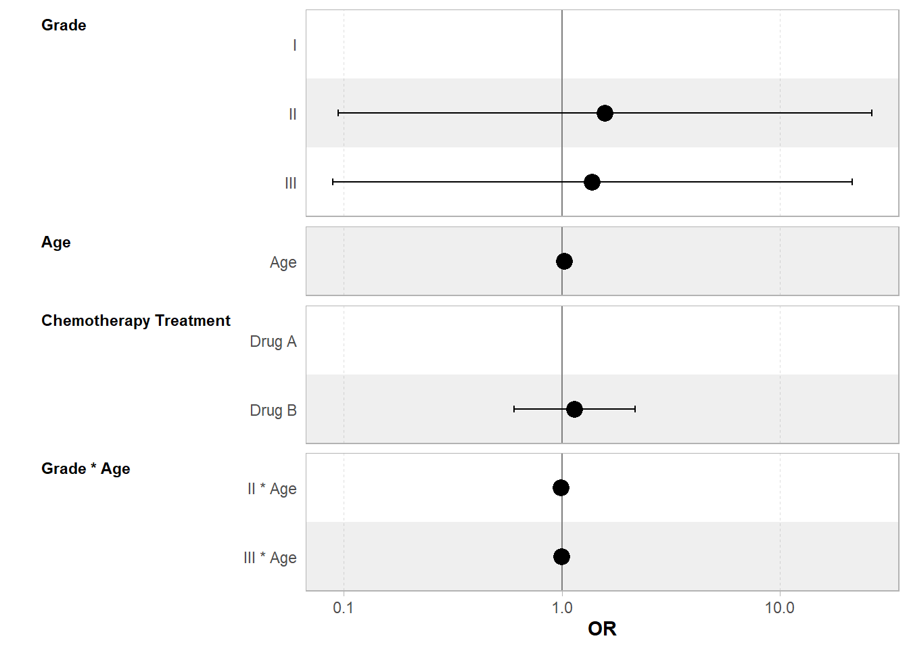
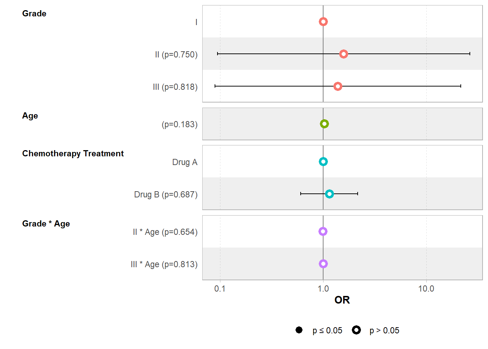

Tableaux statistiques avancés avec gtsummary
- Remarques sur les types de variables et les sélecteurs associés
- Remarques sur la syntaxe des options
- Thèmes
- Statistiques descriptives avec tbl_summary()
- Sélection des variables (include)
- En fonction d’une seconde variable (by, add_overall)
- Statistiques affichées (statistic, percent, sort)
- Affichage du nom des statistiques (add_stat_label)
- Forcer le type de variable (type, value)
- Afficher des statistiques sur plusieurs lignes (continuous2)
- Mise en forme des statistiques (digits)
- Données manquantes (missing, missing_text)
- Étiquettes des variables (label)
- Afficher les effectifs (add_n)
- Mise en forme du tableau (bold_labels, italicize_levels)
- Modifer en-têtes et notes (modify_header, modify_spanning_header, modify_footnote)
- Tests de comparaisons (add_p, separate_p_footnotes)
- Intervalles de confiance (add_ci)
- Différences entre groupes (add_difference)
- Tableau croisé avec tbl_cross()
- Données pondérées et tbl_svysummary()
- Statistiques personnalisées avec tbl_continous() et tbl_custom_summary()
- Résultats d’un modèle avec tbl_regression()
- Afficher seulement certains coefficients (include)
- Étiquettes des variables (label)
- Exponentiation des coefficients (exponentiate)
- Changer l’intitulé des colonnes
- Afficher des étoiles de signification (add_significance_stars)
- Variables dichotomiques sur une ligne (show_single_row)
- Afficher l’intercept (intercept)
- Mise en forme des coefficients (estimate_fun, pvalue_fun)
- Afficher les coefficients pour les références (add_estimate_to_reference_rows)
- P-valeurs globales (add_global_p)
- Ajouter les VIF (add_vif)
- Représenter graphiquement le modèle (plot)
- Afficher des statistiques globales du modèle (add_glance_table, add_glance_source_note)
- Combiner des tableaux
- Régressions univariées multiples avec tbl_uvregression()
- Tables de survie avec tbl_survfit()
- Exporter un tableau
- Plus d’options avec bstfun
Ce chapitre est évoqué dans le webin-R #22 (tableaux statistiques avec gtsummary) sur YouTube.
Ce chapitre est évoqué dans le webin-R #23 (tableaux statistiques avec gtsummary : suite) sur YouTube.
L’extension gtsummary a déjà été abordée dans d’autres chapitres, notamment via les fonctions tbl_summary et tbl_svysummary dans le chapitre sur la statistique bivariée ou la fonction tbl_regression dans le chapitre sur la régression logistique.
Dans ce chapitre, nous allons explorer plus en profondeur les différentes options offertes gtsummary pour la réalisation de tableaux statistiques prêts à être publiés.
Les personnes anglophones pourront également se référer à l’excellent site de documentation du package : https://www.danieldsjoberg.com/gtsummary/
library(gtsummary)Remarques sur les types de variables et les sélecteurs associés
gtsummary permets de réaliser des tableaux statistiques combinant plusieurs variables, l’affichage des résultats pouvant dépendre du type de variables.
Par défaut, gtsummary considère qu’une variable est catégorielle s’il s’agit d’un facteur, d’une variable textuelle ou d’une variable numérique ayant moins de 10 valeurs différentes.
Une variable sera considérée comme dichotomique (variable catégorielle à seulement deux modalités) s’il s’agit d’un vecteur logique (TRUE/FALSE), d’une variable textuelle codée yes/no ou d’une variable numérique codée 0/1.
Dans les autres cas, une variable numérique sera considérée comme continue.
Si vous utilisez des vecteurs labellisés (voir le chapitre dédié), vous devez les convertir, en amont, en facteur ou en variables numériques. Voir l’extension labelled et les fonctions to_factor, unlabelled et unclass.
Nous verrons plus loin qu’il est possible de forcer le type d’une variable et l’existence d’autres types de variables.
gtsummary fournit des sélecteurs qui pourront être utilisés dans les options des différentes fonctions, en particulier all_continuous pour les variables continues, all_dichotolous pour les variables dichotomiques et all_categorical pour les variables catégorielles (incluant les variables dichotomiques, utiliser all_categorical(dichotomous = FALSE) pour sélectionner les variables catégorielles en excluant les variables dichotomiques).
Dans le cadre des tableaux présentant les résultats d’un modèle statistique, il existe en plus d’autres sélecteurs pour sélectionner certains termes spécifiques : all_intercepts (pour sélectionner seulement le ou les intercepts du modèle), all_interaction pour les termes d’interactions entre plusieurs variables, all_contrasts pour sélectionner les variables catégorielles codées avec un contraste particulier.
Remarques sur la syntaxe des options
De nombreuses options des fonctions de gtsummary peuvent s’appliquer seulement à une ou certaines variables. Pour ces options-là, gtsummary attends une formule de la forme variables concernées ~ valeur de l'option ou bien une liste de formules ayant cette forme.
Par exemple, pour modifier l’étiquette associée à une certaine variable, on peut utiliser l’option label de tbl_summary.
tbl_summary(trial, label = age ~ "Âge")
tbl_summary(trial, label = list(age ~ "Âge", trt ~ "Traitement"))gtsummary est très flexible sur la manière d’indiquer la ou les variables concernées. Il peut s’agir du nom de la variable, d’une chaîne de caractères contenant le nom de la variable, ou d’un vecteur contenant le nom de la variable. Les syntaxes ci-dessous sont ainsi équivalentes.
tbl_summary(trial, label = age ~ "Âge")
tbl_summary(trial, label = "age" ~ "Âge")
v <- "age"
tbl_summary(trial, label = v ~ "Âge")
tbl_summary(trial, label = vars(age) ~ "Âge")Pour appliquer le même changement à plusieurs variables, plusieurs syntaxes sont acceptées pour lister plusieurs variables.
tbl_summary(trial, label = c("age", "trt") ~ "Une même étiquette")
tbl_summary(trial, label = c(age, trt) ~ "Une même étiquette")
tbl_summary(trial, label = vars(age, trt) ~ "Une même étiquette")Il est également possible d’utiliser la syntaxe tidyselect et les sélecteurs de tidyselect comme everything, starts_with, contains ou all_of. Ces différents sélecteurs peuvent être combinés au sein d’un c() ou de vars().
tbl_summary(trial, label = everything() ~ "Une même étiquette")
tbl_summary(trial, label = starts_with("a") ~ "Une même étiquette")
tbl_summary(trial, label = c(everything(), -age, -trt) ~ "Une même étiquette")
tbl_summary(trial, label = age:trt ~ "Une même étiquette")Bien sûr, il est possible d’utiliser les sélecteurs propres à gtsummary.
tbl_summary(trial, label = all_continuous() ~ "Une même étiquette")
tbl_summary(trial, label = list(
all_continuous() ~ "Variable continue",
all_dichotomous() ~ "Variable dichotomique",
all_categorical(dichotomous = FALSE) ~ "Variable catégorielle"
))Enfin, si l’on ne précise rien à gauche du ~, ce sera considéré comme équivalent à everything(). Les deux syntaxes ci-dessous sont donc équivalentes.
tbl_summary(trial, label = ~ "Une même étiquette")
tbl_summary(trial, label = everything() ~ "Une même étiquette")Thèmes
gtsummary fournit plusieurs fonctions préfixées theme_gtsummary_*() permettant de modifier l’affichage par défaut des tableaux.
La fonction theme_gtsummary_journal permets d’adopter les standards de certaines grandes revues scientifiques telles que JAMA (Journal of the American Medical Association), The Lancet ou encore le NEJM (New England Journal of Medicine).
Par défaut, tbl_summary utilise la médiane et l’intervalle interquartile pour les variables continues. Si on applique theme_gtsummary_mean_sd, la moyenne et l’écart-type seront utilisés par défaut.
La fonction theme_gtsummary_language permet de modifier la langue utilisée par défaut dans les tableaux. Les options decimal.mark et big.mark permettent de définir respectivement le séparateur de décimales et le séparateur des milliers. Ainsi, pour présenter un tableau en français, on appliquera en début de script :
theme_gtsummary_language(language = "fr", decimal.mark = ",", big.mark = " ")Setting theme `language: fr`Statistiques descriptives avec tbl_summary()
La fonction tbl_summary permets de réaliser des tris à plats de plusieurs variables, éventuellement croisés selon une variable catégorielle.
On lui passe en entrée un tableaux de données (data.frame) et par défaut toutes les variables sont résumées.
trial %>%
tbl_summary()| Caractéristique | N = 2001 |
|---|---|
| Chemotherapy Treatment | |
| Drug A | 98 (49%) |
| Drug B | 102 (51%) |
| Age | 47 (38 – 57) |
| Manquant | 11 |
| Marker Level (ng/mL) | 0,64 (0,22 – 1,39) |
| Manquant | 10 |
| T Stage | |
| T1 | 53 (26%) |
| T2 | 54 (27%) |
| T3 | 43 (22%) |
| T4 | 50 (25%) |
| Grade | |
| I | 68 (34%) |
| II | 68 (34%) |
| III | 64 (32%) |
| Tumor Response | 61 (32%) |
| Manquant | 7 |
| Patient Died | 112 (56%) |
| Months to Death/Censor | 22,4 (16,0 – 24,0) |
| 1 n (%); Médiane (EI) | |
Sélection des variables (include)
La paramètre include permets de spécifier les variables à inclure dans le tableau (et leur ordre). On peut lui passer un vecteur de noms de variables, ou bien utiliser des sélecteurs tidyselect (utiliser c() si plusieurs sélecteurs).
trial %>%
tbl_summary(include = c("age", "marker", "response"))| Caractéristique | N = 2001 |
|---|---|
| Age | 47 (38 – 57) |
| Manquant | 11 |
| Marker Level (ng/mL) | 0,64 (0,22 – 1,39) |
| Manquant | 10 |
| Tumor Response | 61 (32%) |
| Manquant | 7 |
| 1 Médiane (EI); n (%) | |
trial %>%
tbl_summary(include = c(age:stage, starts_with("t")))| Caractéristique | N = 2001 |
|---|---|
| Age | 47 (38 – 57) |
| Manquant | 11 |
| Marker Level (ng/mL) | 0,64 (0,22 – 1,39) |
| Manquant | 10 |
| T Stage | |
| T1 | 53 (26%) |
| T2 | 54 (27%) |
| T3 | 43 (22%) |
| T4 | 50 (25%) |
| Chemotherapy Treatment | |
| Drug A | 98 (49%) |
| Drug B | 102 (51%) |
| Months to Death/Censor | 22,4 (16,0 – 24,0) |
| 1 Médiane (EI); n (%) | |
En fonction d’une seconde variable (by, add_overall)
Le paramètre by permets de résumer chacune des variables inclues en fonction d’une variable catégorielle.
trial %>%
tbl_summary(
include = c(age, stage, response),
by = trt
)| Caractéristique | Drug A, N = 981 | Drug B, N = 1021 |
|---|---|---|
| Age | 46 (37 – 59) | 48 (39 – 56) |
| Manquant | 7 | 4 |
| T Stage | ||
| T1 | 28 (29%) | 25 (25%) |
| T2 | 25 (26%) | 29 (28%) |
| T3 | 22 (22%) | 21 (21%) |
| T4 | 23 (23%) | 27 (26%) |
| Tumor Response | 28 (29%) | 33 (34%) |
| Manquant | 3 | 4 |
| 1 Médiane (EI); n (%) | ||
La fonction add_overall, appliquée après tbl_summary, permets, lorsqu’une variable by a été définie, de rajouter une colonne avec l’ensemble du fichier. L’option last permets de spécifier si l’on veut ajouter cette colonne à la droite du tableau et col_label permet de personnaliser le titre de la colonne (noter le recours aux ** pour indiquer ce qui doit être affiché en gras et {N} qui sera remplacé par le nombre d’observations).
trial %>%
tbl_summary(
include = c(age, stage, response),
by = trt
) %>%
add_overall(last = TRUE, col_label = "**Ensemble** (effectif total: {N})")| Caractéristique | Drug A, N = 981 | Drug B, N = 1021 | Ensemble (effectif total: 200)1 |
|---|---|---|---|
| Age | 46 (37 – 59) | 48 (39 – 56) | 47 (38 – 57) |
| Manquant | 7 | 4 | 11 |
| T Stage | |||
| T1 | 28 (29%) | 25 (25%) | 53 (26%) |
| T2 | 25 (26%) | 29 (28%) | 54 (27%) |
| T3 | 22 (22%) | 21 (21%) | 43 (22%) |
| T4 | 23 (23%) | 27 (26%) | 50 (25%) |
| Tumor Response | 28 (29%) | 33 (34%) | 61 (32%) |
| Manquant | 3 | 4 | 7 |
| 1 Médiane (EI); n (%) | |||
Statistiques affichées (statistic, percent, sort)
Le paramètre statistic permets de sélectionner les statistiques à afficher pour chaque variable. On indiquera une chaîne de caractères dont les différentes statistiques seront indiquées entre accolades ({}).
Pour une variable continue, on pourra utiliser {median} pour la médiane, {mean} pour la moyenne, {sd} pour l’écart type, {var} pour la variance, {min} pour le minimum, {max} pour le maximum, ou encore {p##} (en remplacant ## par un nombre entier entre 00 et 100) pour le percentile correspondant (par exemple p25 et p75 pour le premier et le troisième quartile). Utilisez all_continous pour sélectionner toutes les variables continues.
trial %>%
tbl_summary(
include = c(age, marker),
statistic = all_continuous() ~ "Moy. : {mean} [min-max : {min} - {max}]"
)| Caractéristique | N = 2001 |
|---|---|
| Age | Moy. : 47 [min-max : 6 - 83] |
| Manquant | 11 |
| Marker Level (ng/mL) | Moy. : 0,92 [min-max : 0,00 - 3,87] |
| Manquant | 10 |
| 1 Moy. : Moyenne [min-max : Étendue] | |
Il est possible d’afficher des statistiques différentes pour chaque variable.
trial %>%
tbl_summary(
include = c(age, marker),
statistic = list(
age ~ "Méd. : {median} [{p25} - {p75}]",
marker ~ "Moy. : {mean} ({sd})"
)
)| Caractéristique | N = 2001 |
|---|---|
| Age | Méd. : 47 [38 - 57] |
| Manquant | 11 |
| Marker Level (ng/mL) | Moy. : 0,92 (0,86) |
| Manquant | 10 |
| 1 Méd. : Médiane [EI]; Moy. : Moyenne (ET) | |
Pour les variables continues, il est également possible d’indiquer le nom d’une fonction personnalisée qui prends un vecteur et renvoie une valeur résumé. Par exemple, pour afficher la moyenne des carrés :
moy_carres <- function(x) {
mean(x^2, na.rm = TRUE)
}
trial %>%
tbl_summary(
include = marker,
statistic = ~ "MC : {moy_carres}"
)| Caractéristique | N = 2001 |
|---|---|
| Marker Level (ng/mL) | MC : 1,57 |
| Manquant | 10 |
| 1 MC : moy_carres | |
Pour une variable catégorielle, les statistiques possibles sont {n} le nombre d’observations, {N} le nombre total d’observations, et {p} le pourcentage correspondant. Utilisez all_categorical pour sélectionner toutes les variables catégorielles.
trial %>%
tbl_summary(
include = c(stage, response),
statistic = all_categorical() ~ "{p} % ({n}/{N})"
)| Caractéristique | N = 2001 |
|---|---|
| T Stage | |
| T1 | 26 % (53/200) |
| T2 | 27 % (54/200) |
| T3 | 22 % (43/200) |
| T4 | 25 % (50/200) |
| Tumor Response | 32 % (61/193) |
| Manquant | 7 |
| 1 % % (n/N) | |
Il est possible, pour une variable catégorielle, de trier les modalités de la plus fréquente à la moins fréquente avec le paramètre sort.
trial %>%
tbl_summary(
include = c(stage, response),
sort = all_categorical() ~ "frequency"
)| Caractéristique | N = 2001 |
|---|---|
| T Stage | |
| T2 | 54 (27%) |
| T1 | 53 (26%) |
| T4 | 50 (25%) |
| T3 | 43 (22%) |
| Tumor Response | 61 (32%) |
| Manquant | 7 |
| 1 n (%) | |
Lorsqu’une variable by est définie, on peut utiliser percent pour indiquer le type de pourcentages : en ligne avec "row", en colonne avec "column" et "cell" pour les pourcentages totaux.
trial %>%
tbl_summary(
include = c(stage, response),
by = grade,
statistic = all_categorical() ~ "{p} % ({n}/{N})",
percent = "row"
) %>%
add_overall(last = TRUE)| Caractéristique | I, N = 681 | II, N = 681 | III, N = 641 | Total, N = 2001 |
|---|---|---|---|---|
| T Stage | ||||
| T1 | 32 % (17/53) | 43 % (23/53) | 25 % (13/53) | 100 % (53/53) |
| T2 | 33 % (18/54) | 31 % (17/54) | 35 % (19/54) | 100 % (54/54) |
| T3 | 42 % (18/43) | 26 % (11/43) | 33 % (14/43) | 100 % (43/43) |
| T4 | 30 % (15/50) | 34 % (17/50) | 36 % (18/50) | 100 % (50/50) |
| Tumor Response | 34 % (21/61) | 31 % (19/61) | 34 % (21/61) | 100 % (61/61) |
| Manquant | 1 | 5 | 1 | 7 |
| 1 % % (n/N) | ||||
Pour toutes les variables (catégorielles et continues), les statistiques suivantes sont également disponibles : {N_obs} le nombre total d’observations, {N_miss} le nombre d’observations manquantes (NA), {N_nonmiss} le nombre d’observations non manquantes, {p_miss} le pourcentage d’observations manquantes (i.e. N_miss / N_obs) et {p_nonmiss} le pourcentage d’observations non manquantes (i.e. N_nonmiss / N_obs).
Affichage du nom des statistiques (add_stat_label)
Lorsque l’on affiche de multiples statistiques, la liste des statistiques est regroupée dans une note de tableau qui peut vite devenir un peu confuse.
tbl <- trial %>%
tbl_summary(
include = c(age, marker, grade),
by = trt,
statistic = list(
age ~ "{median} [{p25} - {p75}]",
marker ~ "{mean} ({sd})"
)
)
tbl| Caractéristique | Drug A, N = 981 | Drug B, N = 1021 |
|---|---|---|
| Age | 46 [37 - 59] | 48 [39 - 56] |
| Manquant | 7 | 4 |
| Marker Level (ng/mL) | 1,02 (0,89) | 0,82 (0,83) |
| Manquant | 6 | 4 |
| Grade | ||
| I | 35 (36%) | 33 (32%) |
| II | 32 (33%) | 36 (35%) |
| III | 31 (32%) | 33 (32%) |
| 1 Médiane [EI]; Moyenne (ET); n (%) | ||
La fonction add_stat_label permets d’indiquer le type de statistique à côté du nom des variables ou bien dans une colonne dédiée, plutôt qu’en note de tableau.
tbl %>% add_stat_label()| Caractéristique | Drug A, N = 98 | Drug B, N = 102 |
|---|---|---|
| Age, Médiane [EI] | 46 [37 - 59] | 48 [39 - 56] |
| Manquant | 7 | 4 |
| Marker Level (ng/mL), Moyenne (ET) | 1,02 (0,89) | 0,82 (0,83) |
| Manquant | 6 | 4 |
| Grade, n (%) | ||
| I | 35 (36%) | 33 (32%) |
| II | 32 (33%) | 36 (35%) |
| III | 31 (32%) | 33 (32%) |
tbl %>% add_stat_label(location = "column")| Caractéristique | Statistique | Drug A, N = 98 | Drug B, N = 102 |
|---|---|---|---|
| Age | Médiane [EI] | 46 [37 - 59] | 48 [39 - 56] |
| Manquant | n | 7 | 4 |
| Marker Level (ng/mL) | Moyenne (ET) | 1,02 (0,89) | 0,82 (0,83) |
| Manquant | n | 6 | 4 |
| Grade | |||
| I | n (%) | 35 (36%) | 33 (32%) |
| II | n (%) | 32 (33%) | 36 (35%) |
| III | n (%) | 31 (32%) | 33 (32%) |
Forcer le type de variable (type, value)
Comme abordé plus haut, gtsummary détermine automatiquement le type de chaque variable. Par défaut, la variabe age est traitée comme variable continue, death comme dichotomique (seule la valeur 1 est affichée) et grade comme variable catégorielle.
trial %>%
tbl_summary(
include = c(grade, age, death)
)| Caractéristique | N = 2001 |
|---|---|
| Grade | |
| I | 68 (34%) |
| II | 68 (34%) |
| III | 64 (32%) |
| Age | 47 (38 – 57) |
| Manquant | 11 |
| Patient Died | 112 (56%) |
| 1 n (%); Médiane (EI) | |
Il est cependant possible de forcer un certain type avec l’argument type. Précision, lorsque l’on force une variable en dichotomique, il faut indiquer avec value la valeur à afficher (les autres sont alors masquées).
trial %>%
tbl_summary(
include = c(grade, age, death),
type = list(
grade ~ "dichotomous",
age ~ "categorical",
death ~ "categorical"
),
value = grade ~ "III",
label = grade ~ "Grade III"
)| Caractéristique | N = 2001 |
|---|---|
| Grade III | 64 (32%) |
| Age | |
| 6 | 1 (0,5%) |
| 9 | 1 (0,5%) |
| 10 | 1 (0,5%) |
| 17 | 1 (0,5%) |
| 19 | 2 (1,1%) |
| 20 | 1 (0,5%) |
| 21 | 2 (1,1%) |
| 23 | 1 (0,5%) |
| 25 | 2 (1,1%) |
| 26 | 2 (1,1%) |
| 27 | 1 (0,5%) |
| 28 | 2 (1,1%) |
| 30 | 1 (0,5%) |
| 31 | 7 (3,7%) |
| 32 | 2 (1,1%) |
| 33 | 2 (1,1%) |
| 34 | 6 (3,2%) |
| 35 | 2 (1,1%) |
| 36 | 5 (2,6%) |
| 37 | 4 (2,1%) |
| 38 | 7 (3,7%) |
| 39 | 5 (2,6%) |
| 40 | 2 (1,1%) |
| 41 | 3 (1,6%) |
| 42 | 4 (2,1%) |
| 43 | 7 (3,7%) |
| 44 | 6 (3,2%) |
| 45 | 6 (3,2%) |
| 46 | 3 (1,6%) |
| 47 | 7 (3,7%) |
| 48 | 7 (3,7%) |
| 49 | 6 (3,2%) |
| 50 | 4 (2,1%) |
| 51 | 6 (3,2%) |
| 52 | 4 (2,1%) |
| 53 | 6 (3,2%) |
| 54 | 5 (2,6%) |
| 55 | 2 (1,1%) |
| 56 | 3 (1,6%) |
| 57 | 5 (2,6%) |
| 58 | 3 (1,6%) |
| 59 | 1 (0,5%) |
| 60 | 4 (2,1%) |
| 61 | 5 (2,6%) |
| 62 | 1 (0,5%) |
| 63 | 4 (2,1%) |
| 64 | 1 (0,5%) |
| 65 | 3 (1,6%) |
| 66 | 4 (2,1%) |
| 67 | 4 (2,1%) |
| 68 | 3 (1,6%) |
| 69 | 2 (1,1%) |
| 70 | 1 (0,5%) |
| 71 | 3 (1,6%) |
| 74 | 1 (0,5%) |
| 75 | 1 (0,5%) |
| 76 | 2 (1,1%) |
| 78 | 1 (0,5%) |
| 83 | 1 (0,5%) |
| Manquant | 11 |
| Patient Died | |
| 0 | 88 (44%) |
| 1 | 112 (56%) |
| 1 n (%) | |
Afficher des statistiques sur plusieurs lignes (continuous2)
Pour les variables continues, gtsummary a introduit un type de variable "continuous2", qui doit être attribué manuellement via type, et qui permets d’afficher plusieurs lignes de statistiques (en indiquant plusieurs chaînes de caractères dans statistic). À noter le sélecteur dédié all_continuous2.
trial %>%
tbl_summary(
include = c(age, marker, ttdeath),
type = c(age, marker) ~ "continuous2",
statistic = all_continuous2() ~ c("{median} ({p25} - {p75}", "{mean} ({sd})", "{min} - {max}")
)| Caractéristique | N = 2001 |
|---|---|
| Age | |
| Médiane (EI | 47 (38 - 57 |
| Moyenne (ET) | 47 (14) |
| Étendue | 6 - 83 |
| Manquant | 11 |
| Marker Level (ng/mL) | |
| Médiane (EI | 0,64 (0,22 - 1,39 |
| Moyenne (ET) | 0,92 (0,86) |
| Étendue | 0,00 - 3,87 |
| Manquant | 10 |
| Months to Death/Censor | 22,4 (16,0 – 24,0) |
| 1 Médiane (EI) | |
Mise en forme des statistiques (digits)
L’argument digits permet de spécifier comment mettre en forme les différentes statistiques. Le plus simple est d’indiquer le nombre de décimales à afficher. Il est important de tenir compte que plusieurs statistiques peuvent être affichées pour une même variable. On peut alors indiquer une valeur différente pour chaque statistique.
trial %>%
tbl_summary(
include = c(age, stage),
by = trt,
digits = list(
all_continuous() ~ 1,
all_categorical() ~ c(0, 1)
)
)| Caractéristique | Drug A, N = 981 | Drug B, N = 1021 |
|---|---|---|
| Age | 46,0 (37,0 – 59,0) | 48,0 (39,0 – 56,0) |
| Manquant | 7 | 4 |
| T Stage | ||
| T1 | 28 (28,6%) | 25 (24,5%) |
| T2 | 25 (25,5%) | 29 (28,4%) |
| T3 | 22 (22,4%) | 21 (20,6%) |
| T4 | 23 (23,5%) | 27 (26,5%) |
| 1 Médiane (EI); n (%) | ||
Au lieu d’un nombre de décimales, on peut indiquer plutôt une fonction à appliquer pour mettre en forme le résultat. Par exemple, gtsummary fournit les fonctions suivantes : style_number pour les nombres de manière générale, style_percent pour les pourcentages (les valeurs sont multipliées par 100, mais le symbole % n’est pas ajouté), style_pvalue pour les p-valeurs, style_sigfig qui n’affiche (par défaut) que deux chiffres significatifs, ou encore style_ratio qui est une variante de style_sigfig pour les ratios (comme les odds ratios) que l’on compare à 1.
Il faiut bien noter que ce qui est attendu par digits, c’est une fonction et non le résultat d’une fonction. On indiquera donc le nom de la fonction sans parenthèse.
trial %>%
tbl_summary(include = marker)| Caractéristique | N = 2001 |
|---|---|
| Marker Level (ng/mL) | 0,64 (0,22 – 1,39) |
| Manquant | 10 |
| 1 Médiane (EI) | |
trial %>%
tbl_summary(
include = marker,
digits = all_continuous() ~ c(style_percent, style_pvalue, style_ratio)
)| Caractéristique | N = 2001 |
|---|---|
| Marker Level (ng/mL) | 64 (0,2 – 1,39) |
| Manquant | 10 |
| 1 Médiane (EI) | |
Comme digits attends à recevoir une fonction (et non le résultat) d’une fonction, on ne peut pas passer directement des arguments aux fonctions style_*() de gtsummary. Pour cela il faut créer une fonction à la levée :
trial %>%
tbl_summary(
include = marker,
statistic = ~ "{mean} pour 100",
digits = ~ function(x){style_percent(x, digits = 1)}
)| Caractéristique | N = 2001 |
|---|---|
| Marker Level (ng/mL) | 91,6 pour 100 |
| Manquant | 10 |
| 1 Moyenne pour 100 | |
Une syntaxe alternative consiste à avoir recours à la fonction partial de purrr qui permet d’appeler partiellement
une fonction et de renvoyer une nouvelle fonction.
trial %>%
tbl_summary(
include = marker,
statistic = ~ "{mean} pour 100",
digits = ~ purrr::partial(style_percent, digits = 1)
)| Caractéristique | N = 2001 |
|---|---|
| Marker Level (ng/mL) | 91,6 pour 100 |
| Manquant | 10 |
| 1 Moyenne pour 100 | |
À noter dans l’exemple précédent que les fonctions style_*() de gtsummary tiennent compte du thème défini (ici la virgule comme séparateur de décimale).
Pour une mise en forme plus avancée des nombres, il faut se tourner vers l’extension scales (choir le chapitre dédié). ATTENTION : les fonctions de scales n’héritent pas des paramètres du thème gtsummary actif. Il faut donc personnaliser le séparateur de décimal dans l’appel à la fonction.
trial %>%
tbl_summary(
include = marker,
statistic = ~ "{mean}",
digits = ~ scales::label_number(accuracy = .01, suffix = " ng/mL", decimal.mark = ",")
)| Caractéristique | N = 2001 |
|---|---|
| Marker Level (ng/mL) | 0,92 ng/mL |
| Manquant | 10 |
| 1 Moyenne | |
Données manquantes (missing, missing_text)
Le paramètre missing permets d’indiquer s’il faut afficher le nombre d’observations manquantes (c’est-à-dire égales à NA) : "ifany" (valeur par défaut) affiche ce nombre seulement s’il y en a, "no" masque ce nombre et "always" force l’affichage de ce nombre même s’il n’y pas de valeur manquante. Le paramètre missing_text permets de personnaliser le texte affiché.
trial %>%
tbl_summary(include = c(trt, age))| Caractéristique | N = 2001 |
|---|---|
| Chemotherapy Treatment | |
| Drug A | 98 (49%) |
| Drug B | 102 (51%) |
| Age | 47 (38 – 57) |
| Manquant | 11 |
| 1 n (%); Médiane (EI) | |
trial %>%
tbl_summary(
include = c(trt, age),
missing = "always",
missing_text = "Nbre observations manquantes"
)| Caractéristique | N = 2001 |
|---|---|
| Chemotherapy Treatment | |
| Drug A | 98 (49%) |
| Drug B | 102 (51%) |
| Nbre observations manquantes | 0 |
| Age | 47 (38 – 57) |
| Nbre observations manquantes | 11 |
| 1 n (%); Médiane (EI) | |
Il est à noter, pour les variables catégorielles, que les valeurs manquantes ne sont jamais pris en compte pour le calcul des pourcentages. Pour les inclure dans le calcul, il faut les transformer en valeurs explicites, par exemple avec fct_explicit_na de forcats.
trial %>%
tbl_summary(include = response, type = response ~ "categorical")| Caractéristique | N = 2001 |
|---|---|
| Tumor Response | |
| 0 | 132 (68%) |
| 1 | 61 (32%) |
| Manquant | 7 |
| 1 n (%) | |
trial %>%
mutate(response = response %>% as.factor() %>% forcats::fct_explicit_na(na_level = "non observé")) %>%
tbl_summary(include = response)| Caractéristique | N = 2001 |
|---|---|
| response | |
| 0 | 132 (66%) |
| 1 | 61 (30%) |
| non observé | 7 (3,5%) |
| 1 n (%) | |
Étiquettes des variables (label)
gtsummary, par défaut, prends en compte les étiquettes de variables, si elles existent, et sinon utilisera le nom de chaque variable dans le tableau. Pour rappel, les étiquettes de variables peuvent être manipulées avec l’extension labelled et les fonctions var_label et set_variable_labels.
Il est aussi possible d’utiliser l’option label de tbl_summary pour indiquer des étiquettes personnalisées.
iris %>%
labelled::set_variable_labels(
Petal.Length = "Longueur du pétale",
Petal.Width = "Largeur du pétale"
) %>%
tbl_summary(label = Species ~ "Espèce")| Caractéristique | N = 1501 |
|---|---|
| Sepal.Length | 5,80 (5,10 – 6,40) |
| Sepal.Width | 3,00 (2,80 – 3,30) |
| Longueur du pétale | 4,35 (1,60 – 5,10) |
| Largeur du pétale | 1,30 (0,30 – 1,80) |
| Espèce | |
| setosa | 50 (33%) |
| versicolor | 50 (33%) |
| virginica | 50 (33%) |
| 1 Médiane (EI); n (%) | |
Pour modifier les modalités d’une variable catégorielle, il faut modifier en amont les niveaux du facteur correspondant.
Afficher les effectifs (add_n)
La fonction add_n permets d’ajouter une colonne avec le nombre d’observations (non manquantes par défaut). Plusieurs options permettent de personnaliser le résultat : col_label pour modifier l’intitulé de la colonne; statistic pour personnaliser la ou les statistiques affichées (la liste des statistiques disponibles est disponible dans le fichier d’aide add_n.tbl_summary); last pour la positition de la colonne; footnote pour l’ajout d’une note de tableau.
trial %>%
tbl_summary(include = c(age, marker)) %>%
add_n()| Caractéristique | N | N = 2001 |
|---|---|---|
| Age | 189 | 47 (38 – 57) |
| Manquant | 11 | |
| Marker Level (ng/mL) | 190 | 0,64 (0,22 – 1,39) |
| Manquant | 10 | |
| 1 Médiane (EI) | ||
trial %>%
tbl_summary(
include = c(age, marker),
by = trt,
missing = "no"
) %>%
add_n(
statistic = "{n}/{N}",
col_label = "**Effectifs** (observés / total)",
last = TRUE,
footnote = TRUE
) %>%
add_overall(last = TRUE)| Caractéristique | Drug A, N = 981 | Drug B, N = 1021 | Effectifs (observés / total)2 | Total, N = 2001 |
|---|---|---|---|---|
| Age | 46 (37 – 59) | 48 (39 – 56) | 189/200 | 47 (38 – 57) |
| Marker Level (ng/mL) | 0,84 (0,24 – 1,57) | 0,52 (0,19 – 1,20) | 190/200 | 0,64 (0,22 – 1,39) |
| 1 Médiane (EI) | ||||
| 2 N non manquant/N total | ||||
Mise en forme du tableau (bold_labels, italicize_levels)
Les fonctions bold_labels, bold_levels, italicize_labels et italicize_levels permettent d’afficher les étiquettes de variables et les modalités des variables catégorielles en gras ou en italique.
trial %>%
tbl_summary(
include = c(marker, grade, stage),
by = trt
) %>%
bold_labels() %>%
italicize_levels()| Caractéristique | Drug A, N = 981 | Drug B, N = 1021 |
|---|---|---|
| Marker Level (ng/mL) | 0,84 (0,24 – 1,57) | 0,52 (0,19 – 1,20) |
| Manquant | 6 | 4 |
| Grade | ||
| I | 35 (36%) | 33 (32%) |
| II | 32 (33%) | 36 (35%) |
| III | 31 (32%) | 33 (32%) |
| T Stage | ||
| T1 | 28 (29%) | 25 (25%) |
| T2 | 25 (26%) | 29 (28%) |
| T3 | 22 (22%) | 21 (21%) |
| T4 | 23 (23%) | 27 (26%) |
| 1 Médiane (EI); n (%) | ||
Modifer en-têtes et notes (modify_header, modify_spanning_header, modify_footnote)
La fonction modify_header permet de modifier les en-têtes des colonnes, modify_spanning_header d’ajouter un chapeau regroupant plusieurs colonnes et modify_footnote. On doit indiquer une formule ou une liste de formules indiquant les colonnes concernées et la modification souhaitée.
Il faut néanmoins connaître le nom interne des différentes colonnes. Ceux-ci peuvent âtre affichés avec la fonction show_header_names :
tbl <- trial %>%
tbl_summary(
include = c(age, grade),
by = trt
) %>%
add_overall() %>%
add_p()
tbl| Caractéristique | Total, N = 2001 | Drug A, N = 981 | Drug B, N = 1021 | p-valeur2 |
|---|---|---|---|---|
| Age | 47 (38 – 57) | 46 (37 – 59) | 48 (39 – 56) | 0,7 |
| Manquant | 11 | 7 | 4 | |
| Grade | 0,9 | |||
| I | 68 (34%) | 35 (36%) | 33 (32%) | |
| II | 68 (34%) | 32 (33%) | 36 (35%) | |
| III | 64 (32%) | 31 (32%) | 33 (32%) | |
| 1 Médiane (EI); n (%) | ||||
| 2 test de Wilcoxon-Mann-Whitney; test du khi-deux d'indépendance | ||||
show_header_names(tbl)ℹ As a usage guide, the code below re-creates the current column headers.modify_header(
label = "**Caractéristique**",
stat_0 = "**Total**, N = 200",
stat_1 = "**Drug A**, N = 98",
stat_2 = "**Drug B**, N = 102",
p.value = "**p-valeur**"
)
Column Name Column Header
------------ --------------------
label **Caractéristique**
stat_0 **Total**, N = 200
stat_1 **Drug A**, N = 98
stat_2 **Drug B**, N = 102
p.value **p-valeur** label est la colonne affichant le nom des variables, stat_0 la colonne totale crée par add_overall (ou la colonne unique de statistiques en l’absence de paramètre by) et p.value la colonne crée par add_p. Lorsqu’il y a un paramètre by, des colonnes nommées stat_1, stat_2, etc. sont crées pour chaque valeur de by. La fonction all_stat_cols permets de sélectionner toutes les colonnes dont le nom commence par stat_. On peut également utiliser all_stat_cols(stat_0 = FALSE) sélectionner toutes les colonnes associées à by mais pas celle crée par add_overall.
Dans les étiquettes, on peut utiliser des doubles étoiles (**) pour indiquer du gras et des tirets simples (_) pour de l’italique (il s’agit de codes markdown). On peut utliser {N} pour afficher le nombre total d’observations. Pour les colonnes associées à by, {level}, {n} et {p} correspondent respectivement au niveau du facteur, au nombre d’observations et à la proportion de ce facteur dans l’échantillon total. La valeur NA peut être utilisée pour supprimer les notes associées aux colonnes concernées.
tbl %>%
modify_header(
list(
label ~ "**Variable**",
all_stat_cols(stat_0 = FALSE) ~ "_{level}_ (n={n}, {style_percent(p)}%)",
stat_0 ~ "**TOTAL** (n={N})",
p.value ~ "**Test de comparaison** (p-valeur)"
)
) %>%
modify_footnote(everything() ~ NA) %>%
modify_spanning_header(all_stat_cols() ~ "**Traitement**")| Variable | Traitement | Test de comparaison (p-valeur) | ||
|---|---|---|---|---|
| TOTAL (n=200) | Drug A (n=98, 49%) | Drug B (n=102, 51%) | ||
| Age | 47 (38 – 57) | 46 (37 – 59) | 48 (39 – 56) | 0,7 |
| Manquant | 11 | 7 | 4 | |
| Grade | 0,9 | |||
| I | 68 (34%) | 35 (36%) | 33 (32%) | |
| II | 68 (34%) | 32 (33%) | 36 (35%) | |
| III | 64 (32%) | 31 (32%) | 33 (32%) | |
Tests de comparaisons (add_p, separate_p_footnotes)
Lorsqu’une variable by est définie, la fonction add_p permets d’ajouter des tests de comparaisons entre les groupes et d’afficher les p-valeurs.
trial %>%
tbl_summary(
include = c(trt, marker, age, response, stage),
by = trt
) %>%
add_p()| Caractéristique | Drug A, N = 981 | Drug B, N = 1021 | p-valeur2 |
|---|---|---|---|
| Marker Level (ng/mL) | 0,84 (0,24 – 1,57) | 0,52 (0,19 – 1,20) | 0,085 |
| Manquant | 6 | 4 | |
| Age | 46 (37 – 59) | 48 (39 – 56) | 0,7 |
| Manquant | 7 | 4 | |
| Tumor Response | 28 (29%) | 33 (34%) | 0,5 |
| Manquant | 3 | 4 | |
| T Stage | 0,9 | ||
| T1 | 28 (29%) | 25 (25%) | |
| T2 | 25 (26%) | 29 (28%) | |
| T3 | 22 (22%) | 21 (21%) | |
| T4 | 23 (23%) | 27 (26%) | |
| 1 Médiane (EI); n (%) | |||
| 2 test de Wilcoxon-Mann-Whitney; test du khi-deux d'indépendance | |||
Par défaut, pour les variables continues, un test de Kruskal-Wallis calculé avec la fonction kruskal.test est utilisé lorsqu’il y a trois groupes ou plus, et un test de Wilcoxon-Mann-Whitney calculé avec wilcox.test (test de comparaison des rangs) lorsqu’il n’y a que deux groupes.
Si l’on affiche des moyennes, il serait plus juste d’utiliser un test t de Student (test de compairaison des moyennes) calculé avec t.test.
Pour les variables catégorielles, un test du Chi² calculé avec chisq.test est utilisé par défaut lorsque les effectifs théoriques sont supérieurs à 5, sinon un test de Fosher calculé avec fisher.test est utilisé.
D’autres tests sont disponibles et sont détaillés dans le fichier d’aide add_p.tbl_summary.
Le paramètre test permets de spécifier pour chaque variable le type de tests à utiliser. La fonction separate_p_footnotes peut être utilisée pour créer une note de tableau différente pour chaque test. Le paramètre pvalue_fun permet d’indiquer une fonction personnalisée pour la mise en forme des p-valeurs.
trial %>%
tbl_summary(
include = c(trt, marker, age, response, stage),
statistic = age ~ "{mean} ({sd})",
by = trt
) %>%
add_stat_label() %>%
add_p(
test = list(
response ~ "fisher.test",
age ~ "t.test"
),
pvalue_fun = scales::label_pvalue(accuracy = .0001)
) %>%
separate_p_footnotes()| Caractéristique | Drug A, N = 98 | Drug B, N = 102 | p-valeur |
|---|---|---|---|
| Marker Level (ng/mL), Médiane (EI) | 0,84 (0,24 – 1,57) | 0,52 (0,19 – 1,20) | 0.08471 |
| Manquant | 6 | 4 | |
| Age, Moyenne (ET) | 47 (15) | 47 (14) | 0.83442 |
| Manquant | 7 | 4 | |
| Tumor Response, n (%) | 28 (29%) | 33 (34%) | 0.54033 |
| Manquant | 3 | 4 | |
| T Stage, n (%) | 0.86624 | ||
| T1 | 28 (29%) | 25 (25%) | |
| T2 | 25 (26%) | 29 (28%) | |
| T3 | 22 (22%) | 21 (21%) | |
| T4 | 23 (23%) | 27 (26%) | |
| 1 test de Wilcoxon-Mann-Whitney | |||
| 2 test de Student | |||
| 3 test exact de Fisher | |||
| 4 test du khi-deux d'indépendance | |||
Intervalles de confiance (add_ci)
La fonction add_ci permets d’ajouter des intervalles de confiance dans des colonnes additionnelles. ATTENTION : par défaut, pour les variables continues, cela calcule les intervalles de confiance d’une moyenne et non d’une médiane. Le type d’intervalle peut être modifié avec method (par exemple "wilcox.test" pour l’intervalle de confiance d’une médiane). statistic permet de personnaliser la présentation de l’intervalle. conf.level permets de changer le niveau de confiance. style_fun permets de modifier la fonction de formatage des
trial %>%
tbl_summary(
include = c(age, stage),
by = trt,
statistic = all_continuous() ~ "{mean}"
) %>%
add_overall() %>%
add_ci()| Caractéristique | Total, N = 2001 | 95% CI2 | Drug A, N = 981 | 95% CI2 | Drug B, N = 1021 | 95% CI2 |
|---|---|---|---|---|---|---|
| Age | 47 | 47 | 44, 50 | 47 | 45, 50 | |
| Manquant | 11 | 7 | 4 | |||
| T Stage | ||||||
| T1 | 53 (26%) | 21%, 33% | 28 (29%) | 20%, 39% | 25 (25%) | 17%, 34% |
| T2 | 54 (27%) | 21%, 34% | 25 (26%) | 17%, 35% | 29 (28%) | 20%, 38% |
| T3 | 43 (22%) | 16%, 28% | 22 (22%) | 15%, 32% | 21 (21%) | 13%, 30% |
| T4 | 50 (25%) | 19%, 32% | 23 (23%) | 16%, 33% | 27 (26%) | 18%, 36% |
| 1 Moyenne; n (%) | ||||||
| 2 IC = intervalle de confiance | ||||||
trial %>%
tbl_summary(
include = c(age, marker),
statistic = ~ "{median}"
) %>%
add_ci(
method = ~ "wilcox.test",
statistic = ~ "entre {conf.low} et {conf.high}",
conf.level = .9,
style_fun = ~ scales::label_number(accuracy = .01, decimal.mark = ",")
)| Caractéristique | N = 2001 | 90% CI2 |
|---|---|---|
| Age | 47 | entre 45,50 et 49,00 |
| Manquant | 11 | |
| Marker Level (ng/mL) | 0,64 | entre 0,71 et 0,94 |
| Manquant | 10 | |
| 1 Médiane | ||
| 2 IC = intervalle de confiance | ||
Différences entre groupes (add_difference)
Si la variable spécfiée dans by a exactement 2 niveaux, il est possible de calculer la différence entre deux moyennes (variable continue) ou entre deux proportions (variables dichotomiques uniquement, pas les variables catégorielles), d’afficher l’intervalle de confiance de cette différence et la p-valeur associée (la différence est-elle significativement différente de 0) avec add_difference.
trial %>%
tbl_summary(
include = c(age, marker, response),
by = trt,
statistic = list(
all_continuous() ~ "{mean}",
all_categorical() ~ "{p}%"
),
digits = list(
all_continuous() ~ 2,
all_categorical() ~ 1
)
) %>%
add_difference()| Caractéristique | Drug A, N = 981 | Drug B, N = 1021 | Difference2 | 95% IC2,3 | p-valeur2 |
|---|---|---|---|---|---|
| Age | 47,01 | 47,45 | -0,44 | -4,6 – 3,7 | 0,8 |
| Manquant | 7 | 4 | |||
| Marker Level (ng/mL) | 1,02 | 0,82 | 0,20 | -0,05 – 0,44 | 0,12 |
| Manquant | 6 | 4 | |||
| Tumor Response | 29,5% | 33,7% | -4,2% | -18% – 9,9% | 0,6 |
| Manquant | 3 | 4 | |||
| 1 Moyenne; % | |||||
| 2 test de Student; Two sample test for equality of proportions | |||||
| 3 IC = intervalle de confiance | |||||
D’autres options sont disponibles (comme la possibilité de calculer des différences ajustées sur d’autres variables) et sont explicitées dans le fichier d’aide de add_difference.
Tableau croisé avec tbl_cross()
La fonction tbl_cross est une variation de tbl_summary permettant de croiser deux variables spécfiées avec les arguments row et col. Le type de pourcentage peut-être précisé avec l’arguement percent. Il est possible d’ajouter le résultat d’un test du Chi² avec add_p.tbl_cross.
trial %>%
tbl_cross(
row = grade,
col = trt,
percent = "row"
) %>%
add_p(source_note = TRUE)| Chemotherapy Treatment | Total | ||
|---|---|---|---|
| Drug A | Drug B | ||
| Grade | |||
| I | 35 (51%) | 33 (49%) | 68 (100%) |
| II | 32 (47%) | 36 (53%) | 68 (100%) |
| III | 31 (48%) | 33 (52%) | 64 (100%) |
| Total | 98 (49%) | 102 (51%) | 200 (100%) |
| test du khi-deux d'indépendance, p=0,9 | |||
Données pondérées et tbl_svysummary()
La fonction tbl_svysummary est similaire à tbl_summary à l’exception qu’elle prend en entrée un objet de type survey défini avec l’extension homonyme. Cela permet de définir une pondération des observations et un plan d’échantillonnage complexe. Les options de tbl_svysummary sont similaires et il est possible d’utiliser les autres fonctions de gtsummary telles que add_overall, add_p, add_n, add_stat_label, etc.
Il faut noter que les tests statistiques disponibles ne sont pas les mêmes et sont détaillés dans le fichier d’aide de add_p.tbl_svysummary.
Titanic %>%
as.data.frame() %>%
survey::svydesign(~ 1, data = ., weights = ~Freq) %>%
tbl_svysummary(
by = Survived,
percent = "row"
) %>%
add_stat_label(location = "column") %>%
add_n() %>%
add_overall(last = TRUE) %>%
add_p() %>%
separate_p_footnotes()| Caractéristique | N | Statistique | No, N = 1 490 | Yes, N = 711 | Total, N = 2 2011 | p-valeur |
|---|---|---|---|---|---|---|
| Class | 2 201 | 0,72 | ||||
| 1st | n (%) | 122 (38%) | 203 (62%) | 325 (100%) | ||
| 2nd | n (%) | 167 (59%) | 118 (41%) | 285 (100%) | ||
| 3rd | n (%) | 528 (75%) | 178 (25%) | 706 (100%) | ||
| Crew | n (%) | 673 (76%) | 212 (24%) | 885 (100%) | ||
| Sex | 2 201 | 0,0482 | ||||
| Male | n (%) | 1 364 (79%) | 367 (21%) | 1 731 (100%) | ||
| Female | n (%) | 126 (27%) | 344 (73%) | 470 (100%) | ||
| Age | 2 201 | 0,42 | ||||
| Child | n (%) | 52 (48%) | 57 (52%) | 109 (100%) | ||
| Adult | n (%) | 1 438 (69%) | 654 (31%) | 2 092 (100%) | ||
| Freq | 2 201 | Médiane (EI) | 342 (140 – 513) | 79 (64 – 144) | 183 (92 – 438) | 0,0133 |
| 1 n (%); Médiane (EI) | ||||||
| 2 test du Chi² avec la correction du second ordre de Rao & Scott | ||||||
| 3 test de Wilcoxon sur la somme des rangs adapté aux plans d'échantillonnage complexes | ||||||
Statistiques personnalisées avec tbl_continous() et tbl_custom_summary()
tbl_continuous()
La fonction tbl_continuous permets de résumer une variable continue en fonction de deux ou plusieurs variables catégorielles.
Par exemple, pour afficher l’âge moyen de plusieurs sous-groupes :
trial %>%
tbl_continuous(
variable = age,
statistic = ~ "{mean}",
include = c(stage, grade),
by = trt,
digits = ~ 1
)| Caractéristique | Drug A, N = 981 | Drug B, N = 1021 |
|---|---|---|
| T Stage | ||
| T1 | 44,1 | 49,5 |
| T2 | 50,2 | 46,4 |
| T3 | 48,8 | 50,0 |
| T4 | 45,3 | 44,3 |
| Grade | ||
| I | 45,9 | 46,4 |
| II | 44,6 | 50,3 |
| III | 51,0 | 45,7 |
| 1 Age: Moyenne | ||
tbl_custom_summary()
La fonction tbl_custom_summary permets encore plus de personnalisation que tbl_continuous.
Comme précédemment, un tableau va être créé avec les paramètres include et by. On doit également fournir via stat_fns une fonction personnalisée qui va recevoir un sous tableau de données (obtenu en croisant include et by), contenant toutes les variables du fichier, et qui renverra des statistiques personnalisées que l’on affichera avec statistic. La fonction peut-être différente pour chaque variable.
Il est également possible d’utiliser quelques fonctions dédiées fournies directement par gtsummary.
À noter que l’option overall_raw permets d’afficher une ligne total, overall_raw_label de personnaliser l’étiquette de cette ligne et overall_raw_last de choisir si on souhaite l’afficher en début ou en fin de tableau.
tbl_custom_summary() & continuous_summary()
La fonction continuous_summary permet de reproduire avec tbl_custom_summary le fonctionnement de tbl_continuous. continuous_summary prend un seul argument (le nom d’une variable du fichier). Les statistiques à afficher sont directement précisées avec statistic.
Ainsi, pour afficher l’âge moyen (avec l’écart-type) en fonction des variables trt, grade et stage :
trial %>%
tbl_custom_summary(
include = c("grade", "stage"),
by = "trt",
stat_fns = ~ continuous_summary("age"),
statistic = ~ "{mean} ({sd})",
overall_row = TRUE,
digits = ~ 1
) %>%
add_overall() %>%
modify_footnote(
update = all_stat_cols() ~ "Âge moyen (ET)"
)| Caractéristique | Total, N = 2001 | Drug A, N = 981 | Drug B, N = 1021 |
|---|---|---|---|
| Total | 47,2 (14,3) | 47,0 (14,7) | 47,4 (14,0) |
| Grade | |||
| I | 46,2 (15,2) | 45,9 (16,0) | 46,4 (14,6) |
| II | 47,5 (13,7) | 44,6 (14,8) | 50,3 (12,1) |
| III | 48,1 (14,1) | 51,0 (12,6) | 45,7 (15,0) |
| T Stage | |||
| T1 | 46,8 (14,7) | 44,1 (14,7) | 49,5 (14,5) |
| T2 | 48,1 (12,6) | 50,2 (12,8) | 46,4 (12,4) |
| T3 | 49,4 (14,1) | 48,8 (14,0) | 50,0 (14,5) |
| T4 | 44,8 (16,0) | 45,3 (17,3) | 44,3 (15,0) |
| 1 Âge moyen (ET) | |||
Astuce : la fonction modify_footnote peut être utilisée pour mettre à jour la note de tableau.
tbl_custom_summary() & proportion_summary()
La fonction proportion_summary permets de calculer une proportion (et son intervalle de confiance). Elle prends en entrée la variable à partir de laquelle calculer la proportion et le ou les valeurs à inclure dans cette proportion. Il faut préciser l’affichage souhaité avec statistic et la mise enforme avec digits.
Par exemple, pour afficher la proportion de personnes étant à l’étape “T3” ou “T4” (variable stage) :
trial %>%
tbl_custom_summary(
include = c("grade", "trt"),
stat_fns = ~ proportion_summary(variable = "stage", value = c("T3", "T4")),
statistic = ~ "{prop}% [{conf.low}-{conf.high}]",
digits = ~ scales::label_percent(accuracy = .1, decimal.mark = ",", suffix = "")
)| Caractéristique | N = 2001 |
|---|---|
| Grade | |
| I | 48,5% [36,4-60,9] |
| II | 41,2% [29,6-53,8] |
| III | 50,0% [38,1-61,9] |
| Chemotherapy Treatment | |
| Drug A | 45,9% [35,9-56,3] |
| Drug B | 47,1% [37,2-57,2] |
| 1 prop% [conf.low-conf.high] | |
tbl_custom_summary() & ratio_summary()
La fonction ratio_summary calcule le ratio entre deux variables. Elle peut ainsi être utilisée pour produire un tableau d’incidence (nombre de cas / exposition exprimée en personnes-années). On lui indique le nom de la variable à prendre en compte pour le numérateur et celui de la variable pour le dénominateur. Pour chaque sous-groupe, la fonction renvoie {num} (somme de la variable définie pour le numérateur), {denom} (somme de la variable définie pour le dénominateur) et {ratio} (i.e. {num}/{denom}). Si {num} est un nombre entier, l’intervalle de confiance de {ratio} est calculé à l’aide de la fonction poisson.test et accessible via {conf.high} et {conf.high}.
trial %>%
tbl_custom_summary(
include = c("stage", "grade"),
by = "trt",
stat_fns = ~ ratio_summary("response", "ttdeath"),
statistic = ~ "{ratio} [{conf.low}; {conf.high}] ({num}/{denom})",
digits = ~ c(3, 2, 2, 0, 0),
overall_row = TRUE,
overall_row_label = "Total"
) %>%
bold_labels() %>%
modify_footnote(
update = all_stat_cols() ~ "Ratio [95% CI] (n/N)"
)| Caractéristique | Drug A, N = 981 | Drug B, N = 1021 |
|---|---|---|
| Total | 0,014 [0,01; 0,02] (28/1 983) | 0,017 [0,01; 0,02] (33/1 942) |
| T Stage | ||
| T1 | 0,012 [0,00; 0,02] (7/583) | 0,021 [0,01; 0,04] (11/522) |
| T2 | 0,011 [0,00; 0,02] (6/528) | 0,012 [0,01; 0,03] (7/560) |
| T3 | 0,019 [0,01; 0,04] (8/426) | 0,016 [0,01; 0,03] (7/425) |
| T4 | 0,016 [0,01; 0,03] (7/445) | 0,018 [0,01; 0,04] (8/434) |
| Grade | ||
| I | 0,011 [0,00; 0,02] (8/734) | 0,019 [0,01; 0,03] (13/690) |
| II | 0,011 [0,00; 0,02] (7/651) | 0,019 [0,01; 0,03] (12/645) |
| III | 0,022 [0,01; 0,04] (13/598) | 0,013 [0,01; 0,03] (8/607) |
| 1 Ratio [95% CI] (n/N) | ||
tbl_custom_summary() & écriture d’une fonction personnalisée
Il est également possible, et c’est là toute la puissance de tbl_custom_summary, de définir une fonction personnelle et de la passer via stat_fns.
Cette fonction sera appellée pour chaque cellule du tableau, chaque cellule étant calculée indépendamment.
Une telle fonction recevra les arguments suivants :
dataest un tableau de données contenant un sous-ensemble des données transmises àtbl_custom_summary, plus précisément le sous-ensemble défini par la valeur courante devariableet deby. Il faut noter que les valeurs manquantes (NA) devariablesont également exclues dedata.full_dataest le tableau de données complet transmis àtbl_custom_summary.variableest une valeur textuelle contenant le nom de la variable sur laquelle porte le calcul en cours.byest une valeur textuelle contenant le nom de la variablebys’il y en a une,NULLsinon.typeest une valeur textuelle indiquant le type de variable (continuous, categorical, …).stat_displayest une valeur textuelle indiquant les statistiques qui seront affichées (i.e. la valeur indiquée dans l’argumentstatisticdetbl_custom_summary).
La plupart du temps, une fonction personnalisée n’aura pas besoin de tous ces éléments. C’est pourquoi il est recommandé d’inclure ... dans la définition de la fonction, par exemple ma_fonction <- function(data, ...){}.
La fonction devra impérativement renvoyé un tibble composé d’une seule ligne et avec une colonne par statistique calculée, le nom de la colonne correspondant avec la statistique demandée dans statistic.
Voyons un premier exemple, avec une fonction calculant la somme de marker et l’âge moyen.
ma_fonction <- function(data, ...) {
marker_sum = sum(data$marker, na.rm = TRUE)
mean_age = mean(data$age, na.rm = TRUE)
dplyr::tibble(
marker_sum = marker_sum,
mean_age = mean_age
)
}
ma_fonction(trial)Construisons un tableau à partir de cette dernière.
trial %>%
tbl_custom_summary(
include = c(stage, grade),
by = trt,
stat_fns = ~ ma_fonction,
statistic = ~ "A: {mean_age} - M: {marker_sum}",
digits = everything() ~ c(1, 0),
overall_row = TRUE
) %>%
add_overall(last = TRUE) %>%
modify_footnote(
update = all_stat_cols() ~ "A: âge moyen - M: somme de marker"
) %>%
bold_labels()| Caractéristique | Drug A, N = 981 | Drug B, N = 1021 | Total, N = 2001 |
|---|---|---|---|
| Total | A: 47,0 - M: 94 | A: 47,4 - M: 80 | A: 47,2 - M: 174 |
| T Stage | |||
| T1 | A: 44,1 - M: 19 | A: 49,5 - M: 15 | A: 46,8 - M: 35 |
| T2 | A: 50,2 - M: 29 | A: 46,4 - M: 29 | A: 48,1 - M: 59 |
| T3 | A: 48,8 - M: 21 | A: 50,0 - M: 18 | A: 49,4 - M: 39 |
| T4 | A: 45,3 - M: 24 | A: 44,3 - M: 18 | A: 44,8 - M: 42 |
| Grade | |||
| I | A: 45,9 - M: 39 | A: 46,4 - M: 31 | A: 46,2 - M: 70 |
| II | A: 44,6 - M: 24 | A: 50,3 - M: 19 | A: 47,5 - M: 43 |
| III | A: 51,0 - M: 30 | A: 45,7 - M: 30 | A: 48,1 - M: 61 |
| 1 A: âge moyen - M: somme de marker | |||
Dans notre second exemple, nous souhaitons calculer la moyenne et l’intervalle de confiance de la variable affichée en ligne. Cette fois-ci, la variable en cours n’est pas connue à l’avance mais son nom est accessible via l’argument variable. On peut donc y accéder avec la syntaxe data[[variable]].
mean_ci <- function(data, variable, ...) {
test <- t.test(data[[variable]])
dplyr::tibble(
mean = test$estimate,
conf.low = test$conf.int[1],
conf.high = test$conf.int[2]
)
}
trial %>%
tbl_custom_summary(
include = c("marker", "ttdeath"),
by = "trt",
stat_fns = ~ mean_ci,
statistic = ~ "{mean} [{conf.low}; {conf.high}]"
) %>%
add_overall(last = TRUE) %>%
modify_footnote(
update = all_stat_cols() ~ "moyenne [IC 95%"
)| Caractéristique | Drug A, N = 981 | Drug B, N = 1021 | Total, N = 2001 |
|---|---|---|---|
| Marker Level (ng/mL) | 1,02 [0,83; 1,20] | 0,82 [0,65; 0,99] | 0,92 [0,79; 1,04] |
| Manquant | 6 | 4 | 10 |
| Months to Death/Censor | 20,2 [19,2; 21,2] | 19,0 [18,0; 20,1] | 19,6 [18,9; 20,4] |
| 1 moyenne [IC 95% | |||
Allons un peu plus loin avec notre troisième exemple. Nous nous intéressons non seulement à la moyenne de la variable marker pour une sous-catégorie donnée, mais également si cette moyenne est supérieure ou inférieuree à la grande moyenne (toutes catégories confondues). Nous aurons donc besoin de l’ensemble du jeu de données avec full_data. Cet exemple nous permets également de voir qu’il est possible de renvoyer une statistique textuelle.
diff_to_great_mean <- function(data, full_data, ...) {
mean <- mean(data$marker, na.rm = TRUE)
great_mean <- mean(full_data$marker, na.rm = TRUE)
diff <- mean - great_mean
dplyr::tibble(
mean = mean,
great_mean = great_mean,
diff = diff,
level = ifelse(diff > 0, "haut", "bas")
)
}
trial %>%
tbl_custom_summary(
include = c("grade", "stage"),
by = "trt",
stat_fns = ~ diff_to_great_mean,
statistic = ~ "{mean} ({level}, diff: {diff})",
digits = ~ list(1, as.character, 1),
overall_row = TRUE
) %>%
bold_labels()| Caractéristique | Drug A, N = 981 | Drug B, N = 1021 |
|---|---|---|
| Total | 1,0 (haut, diff: 0,1) | 0,8 (bas, diff: -0,1) |
| Grade | ||
| I | 1,2 (haut, diff: 0,2) | 1,0 (haut, diff: 0,1) |
| II | 0,9 (bas, diff: -0,1) | 0,5 (bas, diff: -0,4) |
| III | 1,0 (haut, diff: 0,1) | 1,0 (haut, diff: 0,1) |
| T Stage | ||
| T1 | 0,7 (bas, diff: -0,2) | 0,7 (bas, diff: -0,3) |
| T2 | 1,2 (haut, diff: 0,3) | 1,0 (haut, diff: 0,1) |
| T3 | 1,1 (haut, diff: 0,1) | 0,9 (haut, diff: 0,0) |
| T4 | 1,1 (haut, diff: 0,2) | 0,7 (bas, diff: -0,2) |
| 1 Moyenne (level, diff: diff) | ||
Il n’existe pas encore de fonction tbl_custom_svysummary acceptant un objet survey en entrée, mais une telle fonction devrait être disponible dans une future version de gtsummary.
Résultats d’un modèle avec tbl_regression()
Déjà abordé dans le chapitre sur la régression logistique, tbl_regression permets d’afficher les coefficients d’un modèle statistique, avec les intervalles de confiance et les p-valeurs.
tbl_regression utilise de manière sous-jacente l’extension broom.helpers et est donc compatible avec tous les types de modèles compatibles.
mod <- glm(
response ~ grade * age + trt,
data = trial,
family = binomial
)
mod %>% tbl_regression()| Caractéristique | log(OR)1 | 95% IC1 | p-valeur |
|---|---|---|---|
| Grade | |||
| I | — | — | |
| II | 0,45 | -2,4 – 3,3 | 0,8 |
| III | 0,32 | -2,4 – 3,1 | 0,8 |
| Age | 0,02 | -0,01 – 0,06 | 0,2 |
| Chemotherapy Treatment | |||
| Drug A | — | — | |
| Drug B | 0,13 | -0,50 – 0,77 | 0,7 |
| Grade * Age | |||
| II * Age | -0,01 | -0,07 – 0,04 | 0,7 |
| III * Age | -0,01 | -0,06 – 0,05 | 0,8 |
| 1 OR = rapport de cotes, IC = intervalle de confiance | |||
Afficher seulement certains coefficients (include)
Le paramètre include permets de choisir les variables / termes à afficher.
mod %>%
tbl_regression(include = c(trt, all_interaction()))| Caractéristique | log(OR)1 | 95% IC1 | p-valeur |
|---|---|---|---|
| Chemotherapy Treatment | |||
| Drug A | — | — | |
| Drug B | 0,13 | -0,50 – 0,77 | 0,7 |
| Grade * Age | |||
| II * Age | -0,01 | -0,07 – 0,04 | 0,7 |
| III * Age | -0,01 | -0,06 – 0,05 | 0,8 |
| 1 OR = rapport de cotes, IC = intervalle de confiance | |||
Étiquettes des variables (label)
On peut personnaliser les étiquettes des variables avec label.
mod %>%
tbl_regression(label = list(
trt ~ "Traitement",
"grade:age" ~ "Interaction entre grade et âge"
))| Caractéristique | log(OR)1 | 95% IC1 | p-valeur |
|---|---|---|---|
| Grade | |||
| I | — | — | |
| II | 0,45 | -2,4 – 3,3 | 0,8 |
| III | 0,32 | -2,4 – 3,1 | 0,8 |
| Age | 0,02 | -0,01 – 0,06 | 0,2 |
| Traitement | |||
| Drug A | — | — | |
| Drug B | 0,13 | -0,50 – 0,77 | 0,7 |
| Interaction entre grade et âge | |||
| II * Age | -0,01 | -0,07 – 0,04 | 0,7 |
| III * Age | -0,01 | -0,06 – 0,05 | 0,8 |
| 1 OR = rapport de cotes, IC = intervalle de confiance | |||
Exponentiation des coefficients (exponentiate)
Pour une régression logistique, il est d’usage d’afficher l’exponentiel des coefficients, ce que l’on peut faire en indiquant exponentiate = TRUE.
mod %>%
tbl_regression(exponentiate = TRUE)| Caractéristique | OR1 | 95% IC1 | p-valeur |
|---|---|---|---|
| Grade | |||
| I | — | — | |
| II | 1,57 | 0,09 – 26,3 | 0,8 |
| III | 1,38 | 0,09 – 21,5 | 0,8 |
| Age | 1,03 | 0,99 – 1,07 | 0,2 |
| Chemotherapy Treatment | |||
| Drug A | — | — | |
| Drug B | 1,14 | 0,60 – 2,16 | 0,7 |
| Grade * Age | |||
| II * Age | 0,99 | 0,93 – 1,04 | 0,7 |
| III * Age | 0,99 | 0,94 – 1,05 | 0,8 |
| 1 OR = rapport de cotes, IC = intervalle de confiance | |||
Changer l’intitulé des colonnes
Comme pour tout tableau gtsummary, l’intitulé des colonnes peut être modifié avec modify_header. On pourra avoir recours à show_header_names pour connaître le nom de chaque colonne.
tbl <- mod %>% tbl_regression(exponentiate = TRUE)
show_header_names(tbl)ℹ As a usage guide, the code below re-creates the current column headers.modify_header(
label = "**Caractéristique**",
estimate = "**OR**",
ci = "**95% IC**",
p.value = "**p-valeur**"
)
Column Name Column Header
------------ --------------------
label **Caractéristique**
estimate **OR**
ci **95% IC**
p.value **p-valeur** tbl %>%
modify_header(estimate ~ "**Odds Ratio**")| Caractéristique | Odds Ratio1 | 95% IC1 | p-valeur |
|---|---|---|---|
| Grade | |||
| I | — | — | |
| II | 1,57 | 0,09 – 26,3 | 0,8 |
| III | 1,38 | 0,09 – 21,5 | 0,8 |
| Age | 1,03 | 0,99 – 1,07 | 0,2 |
| Chemotherapy Treatment | |||
| Drug A | — | — | |
| Drug B | 1,14 | 0,60 – 2,16 | 0,7 |
| Grade * Age | |||
| II * Age | 0,99 | 0,93 – 1,04 | 0,7 |
| III * Age | 0,99 | 0,94 – 1,05 | 0,8 |
| 1 OR = rapport de cotes, IC = intervalle de confiance | |||
Afficher des étoiles de signification (add_significance_stars)
La fonction add_significance_stars ajoute des étoiles de significativité à côté des coefficients. Les options hide_ci, hide_p et hide_se permettent de masquer/afficher les intervalles de confiance, les p-valeurs et les écarts-types.
lm(time ~ ph.ecog + sex, survival::lung) %>%
tbl_regression() %>%
add_significance_stars(
hide_ci = FALSE,
hide_p = FALSE,
hide_se = TRUE
)| Caractéristique | Beta1 | 95% IC2 | p-valeur |
|---|---|---|---|
| ph.ecog | -58** | -96 – -21 | 0,003 |
| sex | 52 | -2,5 – 107 | 0,061 |
| 1 *p<0.05; **p<0.01; ***p<0.001 | |||
| 2 IC = intervalle de confiance | |||
Variables dichotomiques sur une ligne (show_single_row)
L’argument show_single_row permet d’indiquer une liste de variables dichotomiques que l’on souhaite afficher sur une seule ligne (la modalité de référence étant alors masquée). Il est possible d’indiquer all_dichotomous() pour appliquer cette option à toutes les variables dichotomiques.
mod %>%
tbl_regression(show_single_row = trt)| Caractéristique | log(OR)1 | 95% IC1 | p-valeur |
|---|---|---|---|
| Grade | |||
| I | — | — | |
| II | 0,45 | -2,4 – 3,3 | 0,8 |
| III | 0,32 | -2,4 – 3,1 | 0,8 |
| Age | 0,02 | -0,01 – 0,06 | 0,2 |
| Chemotherapy Treatment | 0,13 | -0,50 – 0,77 | 0,7 |
| Grade * Age | |||
| II * Age | -0,01 | -0,07 – 0,04 | 0,7 |
| III * Age | -0,01 | -0,06 – 0,05 | 0,8 |
| 1 OR = rapport de cotes, IC = intervalle de confiance | |||
Afficher l’intercept (intercept)
Par défaut, l’intercept n’est pas affiché. Mais on peut forcer son affichage avec intercept = TRUE.
mod %>%
tbl_regression(intercept = TRUE)| Caractéristique | log(OR)1 | 95% IC1 | p-valeur |
|---|---|---|---|
| (Intercept) | -2,0 | -4,0 – -0,22 | 0,038 |
| Grade | |||
| I | — | — | |
| II | 0,45 | -2,4 – 3,3 | 0,8 |
| III | 0,32 | -2,4 – 3,1 | 0,8 |
| Age | 0,02 | -0,01 – 0,06 | 0,2 |
| Chemotherapy Treatment | |||
| Drug A | — | — | |
| Drug B | 0,13 | -0,50 – 0,77 | 0,7 |
| Grade * Age | |||
| II * Age | -0,01 | -0,07 – 0,04 | 0,7 |
| III * Age | -0,01 | -0,06 – 0,05 | 0,8 |
| 1 OR = rapport de cotes, IC = intervalle de confiance | |||
Mise en forme des coefficients (estimate_fun, pvalue_fun)
L’argument estimate_fun permet de fournir une fonction qui sera utilisée pour mettre en forme les coefficients (et les intervalles de confiance) et pvalue_fun pour une fonction utilisée pour les p-valeurs. Voir le chapitre dédié à la mise en forme des nombres.
mod %>%
tbl_regression(
estimate_fun = scales::label_number(accuracy = .001, decimal.mark = ","),
pvalue_fun = scales::label_pvalue(accuracy = .001, decimal.mark = ",", add_p = TRUE)
)| Caractéristique | log(OR)1 | 95% IC1 | p-valeur |
|---|---|---|---|
| Grade | |||
| I | — | — | |
| II | 0,453 | -2,359 – 3,271 | p=0,750 |
| III | 0,318 | -2,417 – 3,066 | p=0,818 |
| Age | 0,025 | -0,010 – 0,063 | p=0,183 |
| Chemotherapy Treatment | |||
| Drug A | — | — | |
| Drug B | 0,131 | -0,505 – 0,771 | p=0,687 |
| Grade * Age | |||
| II * Age | -0,013 | -0,069 – 0,043 | p=0,654 |
| III * Age | -0,006 | -0,061 – 0,047 | p=0,813 |
| 1 OR = rapport de cotes, IC = intervalle de confiance | |||
Afficher les coefficients pour les références (add_estimate_to_reference_rows)
L’option add_estimate_to_reference_rows = TRUE ajoute la valeur du coefficient pour les modalités de références.
mod %>%
tbl_regression(add_estimate_to_reference_rows = TRUE, exponentiate = TRUE)| Caractéristique | OR1 | 95% IC1 | p-valeur |
|---|---|---|---|
| Grade | |||
| I | 1,00 | — | |
| II | 1,57 | 0,09 – 26,3 | 0,8 |
| III | 1,38 | 0,09 – 21,5 | 0,8 |
| Age | 1,03 | 0,99 – 1,07 | 0,2 |
| Chemotherapy Treatment | |||
| Drug A | 1,00 | — | |
| Drug B | 1,14 | 0,60 – 2,16 | 0,7 |
| Grade * Age | |||
| II * Age | 0,99 | 0,93 – 1,04 | 0,7 |
| III * Age | 0,99 | 0,94 – 1,05 | 0,8 |
| 1 OR = rapport de cotes, IC = intervalle de confiance | |||
P-valeurs globales (add_global_p)
La fonction add_global_p calcule une p-valeur globale pour chaque variable. On ajoutera keep = TRUE pour conserver les p-valeurs individuelles de chaque coefficient.
Note : par défaut, les p-valeurs globales calculées sont du type III. Voir la note dédiée aux p-valeurs globales dans le chapitre sur la régression logistique.
mod %>%
tbl_regression() %>%
add_global_p(keep = TRUE)| Caractéristique | log(OR)1 | 95% IC1 | p-valeur |
|---|---|---|---|
| Grade | >0,9 | ||
| I | — | — | |
| II | 0,45 | -2,4 – 3,3 | 0,8 |
| III | 0,32 | -2,4 – 3,1 | 0,8 |
| Age | 0,02 | -0,01 – 0,06 | 0,2 |
| Chemotherapy Treatment | 0,7 | ||
| Drug A | — | — | |
| Drug B | 0,13 | -0,50 – 0,77 | 0,7 |
| Grade * Age | >0,9 | ||
| II * Age | -0,01 | -0,07 – 0,04 | 0,7 |
| III * Age | -0,01 | -0,06 – 0,05 | 0,8 |
| 1 OR = rapport de cotes, IC = intervalle de confiance | |||
Ajouter les VIF (add_vif)
Dans le chapitre sur la multicolinéarité, nous avons abordé les facteurs d’inflation de la variance (FIV) ou variance inflation factor (VIF) en anglais. Ils peuvent être facilement calculés avec add_vif.
mod %>%
tbl_regression() %>%
add_vif()there are higher-order terms (interactions) in this model
consider setting type = 'predictor'; see ?vif| Caractéristique | log(OR)1 | 95% IC1 | p-valeur | GVIF1 | Adjusted GVIF2,1 |
|---|---|---|---|---|---|
| Grade | 174 | 3,6 | |||
| I | — | — | |||
| II | 0,45 | -2,4 – 3,3 | 0,8 | ||
| III | 0,32 | -2,4 – 3,1 | 0,8 | ||
| Age | 0,02 | -0,01 – 0,06 | 0,2 | 2,6 | 1,6 |
| Chemotherapy Treatment | 1,0 | 1,0 | |||
| Drug A | — | — | |||
| Drug B | 0,13 | -0,50 – 0,77 | 0,7 | ||
| Grade * Age | 199 | 3,8 | |||
| II * Age | -0,01 | -0,07 – 0,04 | 0,7 | ||
| III * Age | -0,01 | -0,06 – 0,05 | 0,8 | ||
| 1 OR = rapport de cotes, IC = intervalle de confiance, GVIF = Generalized Variance Inflation Factor | |||||
| 2 GVIF^[1/(2*df)] | |||||
Représenter graphiquement le modèle (plot)
Nous avons déjà abordé dans d’autres chapitres la fonction ggcoef_model de GGally pour la représentation graphiques des coefficients. Pour un graphique rapide, on peut appliquer plot() à un tableau généré avec tbl_regression pour produire rapidement un graphique des coefficients.
mod %>%
tbl_regression(exponentiate = TRUE) %>%
plot()
Cependant, si l’on souhaite plus d’options de personnalisation, on utilisera directement ggcoef_model de GGally.
mod %>%
GGally::ggcoef_model(exponentiate = TRUE)
Afficher des statistiques globales du modèle (add_glance_table, add_glance_source_note)
La méthode glance de broom permets de calculer des statistiques globales sur un modèle (comme le R² ou l’AIC, les statistiques calculées dépendant de chaque modèle).
mod %>% broom::glance()Ces statistiques globales peuvent être ajoutées au tableau avec add_glance_table ou en notes avec add_glance_source_note. Le paramètre include permets de choisir les éléments à afficher parmi les colonnes du tableau générés par glance.
mod %>%
tbl_regression() %>%
add_glance_table()Warning in cond & tbl$locname != "title": longer object
length is not a multiple of shorter object lengthWarning in cond & tbl$locname != "subtitle": longer object
length is not a multiple of shorter object length| Caractéristique | log(OR)1 | 95% IC1 | p-valeur |
|---|---|---|---|
| Grade | |||
| I | — | — | |
| II | 0,45 | -2,4 – 3,3 | 0,8 |
| III | 0,32 | -2,4 – 3,1 | 0,8 |
| Age | 0,02 | -0,01 – 0,06 | 0,2 |
| Chemotherapy Treatment | |||
| Drug A | — | — | |
| Drug B | 0,13 | -0,50 – 0,77 | 0,7 |
| Grade * Age | |||
| II * Age | -0,01 | -0,07 – 0,04 | 0,7 |
| III * Age | -0,01 | -0,06 – 0,05 | 0,8 |
| déviance nulle | 229 | ||
| degrés de liberté du modèle nul | 182 | ||
| Log-likelihood | -113 | ||
| AIC | 239 | ||
| BIC | 262 | ||
| Deviance | 225 | ||
| degrés de liberté des résidus | 176 | ||
| No. Obs. | 183 | ||
| 1 OR = rapport de cotes, IC = intervalle de confiance | |||
mod %>%
tbl_regression() %>%
add_glance_source_note(include = c("nobs", "AIC"))| Caractéristique | log(OR)1 | 95% IC1 | p-valeur |
|---|---|---|---|
| Grade | |||
| I | — | — | |
| II | 0,45 | -2,4 – 3,3 | 0,8 |
| III | 0,32 | -2,4 – 3,1 | 0,8 |
| Age | 0,02 | -0,01 – 0,06 | 0,2 |
| Chemotherapy Treatment | |||
| Drug A | — | — | |
| Drug B | 0,13 | -0,50 – 0,77 | 0,7 |
| Grade * Age | |||
| II * Age | -0,01 | -0,07 – 0,04 | 0,7 |
| III * Age | -0,01 | -0,06 – 0,05 | 0,8 |
| No. Obs. = 183; AIC = 239 | |||
| 1 OR = rapport de cotes, IC = intervalle de confiance | |||
Combiner des tableaux
tbl_stack() & tbl_merge()
La fonction tbl_stack permets de coller
deux (ou plus) tableaux l’un au-dessus de l’autre tandis que tbl_merge les placera côte-à-côte, en s’assurant qu’une même variable sera bien affichée sur la même ligne.
t1 <-
glm(response ~ trt, trial, family = binomial) %>%
tbl_regression(exponentiate = TRUE)
t2 <-
glm(response ~ grade + trt + stage + marker, trial, family = binomial) %>%
tbl_regression(exponentiate = TRUE)
tbl_stack(
list(t1, t2),
group_header = c("Modèle bivarié", "Modèle multivarié")
)| Caractéristique | OR1 | 95% IC1 | p-valeur |
|---|---|---|---|
| Modèle bivarié | |||
| Chemotherapy Treatment | |||
| Drug A | — | — | |
| Drug B | 1,21 | 0,66 – 2,24 | 0,5 |
| Modèle multivarié | |||
| Grade | |||
| I | — | — | |
| II | 1,18 | 0,52 – 2,66 | 0,7 |
| III | 1,14 | 0,52 – 2,50 | 0,7 |
| Chemotherapy Treatment | |||
| Drug A | — | — | |
| Drug B | 1,48 | 0,78 – 2,86 | 0,2 |
| T Stage | |||
| T1 | — | — | |
| T2 | 0,46 | 0,18 – 1,14 | 0,10 |
| T3 | 1,04 | 0,41 – 2,61 | >0,9 |
| T4 | 0,69 | 0,28 – 1,64 | 0,4 |
| Marker Level (ng/mL) | 1,47 | 1,00 – 2,15 | 0,048 |
| 1 OR = rapport de cotes, IC = intervalle de confiance | |||
tbl_merge(
list(t1, t2),
tab_spanner = c("Modèle bivarié", "Modèle multivarié")
)| Caractéristique | Modèle bivarié | Modèle multivarié | ||||
|---|---|---|---|---|---|---|
| OR1 | 95% IC1 | p-valeur | OR1 | 95% IC1 | p-valeur | |
| Chemotherapy Treatment | ||||||
| Drug A | — | — | — | — | ||
| Drug B | 1,21 | 0,66 – 2,24 | 0,5 | 1,48 | 0,78 – 2,86 | 0,2 |
| Grade | ||||||
| I | — | — | ||||
| II | 1,18 | 0,52 – 2,66 | 0,7 | |||
| III | 1,14 | 0,52 – 2,50 | 0,7 | |||
| T Stage | ||||||
| T1 | — | — | ||||
| T2 | 0,46 | 0,18 – 1,14 | 0,10 | |||
| T3 | 1,04 | 0,41 – 2,61 | >0,9 | |||
| T4 | 0,69 | 0,28 – 1,64 | 0,4 | |||
| Marker Level (ng/mL) | 1,47 | 1,00 – 2,15 | 0,048 | |||
| 1 OR = rapport de cotes, IC = intervalle de confiance | ||||||
tbl_strata()
La fonction tbl_strata permet de calculer un tableau gtsummary pour chaque modalité d’une variable catégorielle définie via strata, puis de combiner les tableaux entre eux. Le paramètre .tbl_fun indique la fonction à utiliser pour le calcul du tableau. On peut utiliser la syntaxe rapide d’écritude de fonction propre au tidyverse en indiquant une formule (qui commence par ~) et en utilisant .x pour indiquer où passer le sous-ensemble de données.
Par défaut les sous-tableaux produits sont combinés avec tbl_merge.
trial %>%
select(age, grade, stage, trt) %>%
mutate(grade = paste("Grade", grade)) %>%
tbl_strata(
strata = grade,
.tbl_fun =
~ .x %>%
tbl_summary(by = trt, missing = "no") %>%
add_n()
)| Caractéristique | Grade I | Grade II | Grade III | ||||||
|---|---|---|---|---|---|---|---|---|---|
| N | Drug A, N = 351 | Drug B, N = 331 | N | Drug A, N = 321 | Drug B, N = 361 | N | Drug A, N = 311 | Drug B, N = 331 | |
| Age | 66 | 46 (36 – 60) | 48 (42 – 55) | 62 | 44 (31 – 54) | 50 (43 – 57) | 61 | 52 (42 – 60) | 45 (36 – 52) |
| T Stage | 68 | 68 | 64 | ||||||
| T1 | 8 (23%) | 9 (27%) | 14 (44%) | 9 (25%) | 6 (19%) | 7 (21%) | |||
| T2 | 8 (23%) | 10 (30%) | 8 (25%) | 9 (25%) | 9 (29%) | 10 (30%) | |||
| T3 | 11 (31%) | 7 (21%) | 5 (16%) | 6 (17%) | 6 (19%) | 8 (24%) | |||
| T4 | 8 (23%) | 7 (21%) | 5 (16%) | 12 (33%) | 10 (32%) | 8 (24%) | |||
| 1 Médiane (EI); n (%) | |||||||||
Pour les combiner avec tbl_stack, on indiquera .combine_with = "tbl_stack".
trial %>%
select(age, grade, stage, trt) %>%
mutate(grade = paste("Grade", grade)) %>%
tbl_strata(
strata = grade,
.tbl_fun =
~ .x %>%
tbl_summary(by = trt, missing = "no") %>%
add_n(),
.combine_with = "tbl_stack"
)ℹ Column headers among stacked tables differ. Headers from the first table are
used. Use `quiet = TRUE` to supress this message.| Caractéristique | N | Drug A, N = 351 | Drug B, N = 331 |
|---|---|---|---|
| Grade I | |||
| Age | 66 | 46 (36 – 60) | 48 (42 – 55) |
| T Stage | 68 | ||
| T1 | 8 (23%) | 9 (27%) | |
| T2 | 8 (23%) | 10 (30%) | |
| T3 | 11 (31%) | 7 (21%) | |
| T4 | 8 (23%) | 7 (21%) | |
| Grade II | |||
| Age | 62 | 44 (31 – 54) | 50 (43 – 57) |
| T Stage | 68 | ||
| T1 | 14 (44%) | 9 (25%) | |
| T2 | 8 (25%) | 9 (25%) | |
| T3 | 5 (16%) | 6 (17%) | |
| T4 | 5 (16%) | 12 (33%) | |
| Grade III | |||
| Age | 61 | 52 (42 – 60) | 45 (36 – 52) |
| T Stage | 64 | ||
| T1 | 6 (19%) | 7 (21%) | |
| T2 | 9 (29%) | 10 (30%) | |
| T3 | 6 (19%) | 8 (24%) | |
| T4 | 10 (32%) | 8 (24%) | |
| 1 Médiane (EI); n (%) | |||
Régressions univariées multiples avec tbl_uvregression()
La fonction tbl_uvregression est utile pour réaliser plusieurs régressions univariées. Il faut lui passer un tableau ne contenant que la variable à expliquer et les variables explicatives. La variable à expliquer sera indiquée avec y. L’argument method indique la fonction à utiliser pour le calcul des modèles univariés, par exemple glm pour une régression logistique ordinale. On pourra indiquer des paramètres à transmettre à cette fonction avec method.args, par exemple list(family = binomial) dans le cadre d’une régreession logistique binaire.
tbl_uni <- tbl_uvregression(
trial %>% select(response, age, grade, stage),
method = glm,
y = response,
method.args = list(family = binomial),
exponentiate = TRUE,
hide_n = TRUE
)
tbl_uni| Caractéristique | OR1 | 95% IC1 | p-valeur |
|---|---|---|---|
| Age | 1,02 | 1,00 – 1,04 | 0,10 |
| Grade | |||
| I | — | — | |
| II | 0,95 | 0,45 – 2,00 | 0,9 |
| III | 1,10 | 0,52 – 2,29 | 0,8 |
| T Stage | |||
| T1 | — | — | |
| T2 | 0,63 | 0,27 – 1,46 | 0,3 |
| T3 | 1,13 | 0,48 – 2,68 | 0,8 |
| T4 | 0,83 | 0,36 – 1,92 | 0,7 |
| 1 OR = rapport de cotes, IC = intervalle de confiance | |||
On peut facilement présenter côte-à-côte l’analyse descriptive, l’analyse bivariée et l’analyse multivariée avec tbl_merge.
tbl_desc <- trial %>%
tbl_summary(
by = response,
include = c(age, grade, stage)
)7 observations missing `response` have been removed. To include these observations, use `forcats::fct_explicit_na()` on `response` column before passing to `tbl_summary()`.tbl_multi <- trial %>%
glm(
response ~ age + grade + stage,
data = .,
family = binomial
) %>%
tbl_regression(exponentiate = TRUE)
tbl_merge(
list(tbl_desc, tbl_uni, tbl_multi),
tab_spanner = c("**Analyse descriptive**", "**Modèles bivariés**", "**Modèle multivarié**")
)| Caractéristique | Analyse descriptive | Modèles bivariés | Modèle multivarié | |||||
|---|---|---|---|---|---|---|---|---|
| 0, N = 1321 | 1, N = 611 | OR2 | 95% IC2 | p-valeur | OR2 | 95% IC2 | p-valeur | |
| Age | 46 (36 – 55) | 49 (43 – 59) | 1,02 | 1,00 – 1,04 | 0,10 | 1,02 | 1,00 – 1,04 | 0,092 |
| Manquant | 7 | 3 | ||||||
| Grade | ||||||||
| I | 46 (35%) | 21 (34%) | — | — | — | — | ||
| II | 44 (33%) | 19 (31%) | 0,95 | 0,45 – 2,00 | 0,9 | 0,84 | 0,38 – 1,85 | 0,7 |
| III | 42 (32%) | 21 (34%) | 1,10 | 0,52 – 2,29 | 0,8 | 1,05 | 0,49 – 2,25 | >0,9 |
| T Stage | ||||||||
| T1 | 34 (26%) | 18 (30%) | — | — | — | — | ||
| T2 | 39 (30%) | 13 (21%) | 0,63 | 0,27 – 1,46 | 0,3 | 0,57 | 0,23 – 1,34 | 0,2 |
| T3 | 25 (19%) | 15 (25%) | 1,13 | 0,48 – 2,68 | 0,8 | 0,91 | 0,37 – 2,22 | 0,8 |
| T4 | 34 (26%) | 15 (25%) | 0,83 | 0,36 – 1,92 | 0,7 | 0,76 | 0,31 – 1,85 | 0,6 |
| 1 Médiane (EI); n (%) | ||||||||
| 2 OR = rapport de cotes, IC = intervalle de confiance | ||||||||
Tables de survie avec tbl_survfit()
L’analyse de survie et les courbes de Kaplan-Meier sont abordées dans un chapitre dédié. La fonction tbl_survfit permets de représenter la probabilité encore en vie à différents points de temps définis avec times.
library(survival)
km <- survfit(Surv(ttdeath, death) ~ trt, trial)
survminer::ggsurvplot(km)km %>%
tbl_survfit(
times = c(0, 6, 12, 18, 24),
label_header = "**Mois {time}**"
)| Caractéristique | Mois 0 | Mois 6 | Mois 12 | Mois 18 | Mois 24 |
|---|---|---|---|---|---|
| Chemotherapy Treatment | |||||
| Drug A | 100% (100% – 100%) | 99% (97% – 100%) | 91% (85% – 97%) | 70% (62% – 80%) | 47% (38% – 58%) |
| Drug B | 100% (100% – 100%) | 99% (97% – 100%) | 86% (80% – 93%) | 60% (51% – 70%) | 41% (33% – 52%) |
On peut alternativement représenter la proportion ayant vécu l’évènement avec reverse = TRUE.
km %>%
tbl_survfit(
times = c(6, 12),
reverse = TRUE
)| Caractéristique | Temps 6 | Temps 12 |
|---|---|---|
| Chemotherapy Treatment | ||
| Drug A | 1,0% (0% – 3,0%) | 9,2% (3,3% – 15%) |
| Drug B | 1,0% (0% – 2,9%) | 14% (6,8% – 20%) |
Au lieu d’indiquer des points de temps, on peut indiquer des quantiles avec probs et représenter le temps requis pour atteindre ces quantiles.
km %>%
tbl_survfit(probs = c(.25, .5, .75))| Caractéristique | 25% Percentile | 50% Percentile | 75% Percentile |
|---|---|---|---|
| Chemotherapy Treatment | |||
| Drug A | 17 (16 – 20) | 24 (21 – —) | — (— – —) |
| Drug B | 15 (13 – 17) | 21 (18 – —) | — (— – —) |
Il est également possible de passer une liste d’objets survfit.
list(
survfit(Surv(ttdeath, death) ~ 1, trial),
survfit(Surv(ttdeath, death) ~ trt, trial),
survfit(Surv(ttdeath, death) ~ grade, trial)
) %>%
tbl_survfit(
times = c(6, 12, 18),
label_header = "**Mois {time}**"
)| Caractéristique | Mois 6 | Mois 12 | Mois 18 |
|---|---|---|---|
| Total | 99% (98% – 100%) | 88% (84% – 93%) | 65% (59% – 72%) |
| Chemotherapy Treatment | |||
| Drug A | 99% (97% – 100%) | 91% (85% – 97%) | 70% (62% – 80%) |
| Drug B | 99% (97% – 100%) | 86% (80% – 93%) | 60% (51% – 70%) |
| Grade | |||
| I | 100% (100% – 100%) | 97% (93% – 100%) | 75% (65% – 86%) |
| II | 100% (100% – 100%) | 82% (74% – 92%) | 60% (50% – 73%) |
| III | 97% (93% – 100%) | 86% (78% – 95%) | 59% (48% – 73%) |
Dernière possibilité, il est possible de passer un tableau de données et d’indiquer les variables à analyser. Les tables de survie seront alors calculées à la volée.
trial %>%
tbl_survfit(
y = Surv(ttdeath, death),
include = c(trt, grade, stage),
probs = 0.5,
label_header = "**Survie médiane en mois** (IC 95%)",
estimate_fun = scales::label_number(accuracy = .1)
)| Caractéristique | Survie médiane en mois (IC 95%) |
|---|---|
| Chemotherapy Treatment | |
| Drug A | 23.5 (21.2 – —) |
| Drug B | 21.2 (18.2 – —) |
| Grade | |
| I | — (22.1 – —) |
| II | 22.2 (18.0 – —) |
| III | 19.7 (17.6 – 23.2) |
| T Stage | |
| T1 | — (22.7 – —) |
| T2 | — (20.1 – —) |
| T3 | 22.9 (18.3 – —) |
| T4 | 17.2 (15.6 – 22.4) |
Exporter un tableau
Les tableaux produits par gtsummary peuvent être rendus avec plusieurs moteurs de tableaux, grace aux fonctions as_flex_table, as_hux_table, as_kable_extra, et as_kable. Ils peuvent même être convertis en tableaux de données avec , as_tibble.
Dans un document R Markdown, gtsummary utilisera le moteur de tableaux le plus adapté selon la sortie (HTML, PDF ou Word).

Formats d’export d’un tableau gtsummary
tbl <- trial %>%
tbl_summary(
include = c(age, grade),
by = trt
) %>%
add_p()
tbl %>% as_gt()| Caractéristique | Drug A, N = 981 | Drug B, N = 1021 | p-valeur2 |
|---|---|---|---|
| Age | 46 (37 – 59) | 48 (39 – 56) | 0,7 |
| Manquant | 7 | 4 | |
| Grade | 0,9 | ||
| I | 35 (36%) | 33 (32%) | |
| II | 32 (33%) | 36 (35%) | |
| III | 31 (32%) | 33 (32%) | |
| 1 Médiane (EI); n (%) | |||
| 2 test de Wilcoxon-Mann-Whitney; test du khi-deux d'indépendance | |||
tbl %>% as_flex_table()Caractéristique | Drug A, N = 981 | Drug B, N = 1021 | p-valeur2 |
Age | 46 (37 – 59) | 48 (39 – 56) | 0,7 |
Manquant | 7 | 4 | |
Grade | 0,9 | ||
I | 35 (36%) | 33 (32%) | |
II | 32 (33%) | 36 (35%) | |
III | 31 (32%) | 33 (32%) | |
1Médiane (EI); n (%) | |||
2test de Wilcoxon-Mann-Whitney; test du khi-deux d'indépendance | |||
tbl %>% as_hux_table()Caractéristique | Drug A, N = 98 | Drug B, N = 102 | p-valeur |
|---|---|---|---|
| Age | 46 (37 – 59) | 48 (39 – 56) | 0,7 |
| Manquant | 7 | 4 | |
| Grade | 0,9 | ||
| I | 35 (36%) | 33 (32%) | |
| II | 32 (33%) | 36 (35%) | |
| III | 31 (32%) | 33 (32%) | |
| Médiane (EI); n (%) | |||
| test de Wilcoxon-Mann-Whitney; test du khi-deux d'indépendance | |||
tbl %>% as_kable_extra()| Caractéristique | Drug A, N = 98 | Drug B, N = 102 | p-valeur |
|---|---|---|---|
| Age | 46 (37 – 59) | 48 (39 – 56) | 0,7 |
| Manquant | 7 | 4 | |
| Grade | 0,9 | ||
| I | 35 (36%) | 33 (32%) | |
| II | 32 (33%) | 36 (35%) | |
| III | 31 (32%) | 33 (32%) | |
| 1 Médiane (EI); n (%) | |||
| 2 test de Wilcoxon-Mann-Whitney; test du khi-deux d’indépendance |
tbl %>% as_tibble()# A tibble: 6 × 4
`**Caractéristique**` `**Drug A**, N = 98` **Dru…¹ **p-v…²
<chr> <chr> <chr> <chr>
1 Age 46 (37 – 59) 48 (39… 0,7
2 Manquant 7 4 <NA>
3 Grade <NA> <NA> 0,9
4 I 35 (36%) 33 (32… <NA>
5 II 32 (33%) 36 (35… <NA>
6 III 31 (32%) 33 (32… <NA>
# … with abbreviated variable names ¹`**Drug B**, N = 102`,
# ²`**p-valeur**`En dehors d’un fichier R markdown, pour exporter un tableau dans un fichier HTML, TeX ou RTF, on pourra utiliser gtsave de gt.
tbl %>%
as_gt() %>%
gt::gtsave(filename = ".") # use extensions .html .tex .ltx .rtfPour exporter un tableau dans un fichier Word, on pourra avoir recours à save_as_docx de flextable.
tbl %>%
as_flex_table() %>%
flextable::save_as_docx()Plus d’options avec bstfun
L’extension bstfun est une petite sœur de gtsummary, développée par la même équipe. Cette extension n’est pas disponible sur CRAN mais seulement sur GitHub et elle permet, entre autres, de tester certaines fonctionnalités avant leur éventuelle intégration dans gtsummary.
Cette extension n’étant disponible que sur GitHub, elle s’installe avec la commande ci-après. ATTENTION : sous Windows, vous aurez besoin d’avoir installer en amont l’outil R Tools disponible sur https://cran.r-project.org/bin/windows/Rtools/.
devtools::install_github("ddsjoberg/bstfun")tbl_likert()
En sciences sociales, il est fréquent de mesurer des connaissances ou des opinions selon une échelle de Likert. Dans cette situation, nous avons alors plusieurs variables catégorielles partageant les mêmes modalités.
Prenons les données utilisées dans le chapitre Exemples de graphiques avancés.
load(url("https://larmarange.github.io/analyse-R/data/connaissances.RData"))library(labelled)
quest %>% lookfor("conn") pos variable label col_type values
2 conn_a — fct oui
non
NSP
3 conn_b — fct oui
non
NSP
4 conn_c — fct oui
non
NSP
5 conn_d — fct oui
non
NSP
6 conn_e — fct oui
non
NSP
7 conn_f — fct oui
non
NSP
8 conn_g — fct oui
non
NSP Nous avons une série de 8 variables avec les mêmes modalités (Oui, Non et NSP). Un tri à plat peut-être un peu fastidieux à lire.
quest %>%
tbl_summary(include = starts_with("conn_"))| Caractéristique | N = 5001 |
|---|---|
| conn_a | |
| oui | 36 (7,5%) |
| non | 442 (92%) |
| NSP | 1 (0,2%) |
| Manquant | 21 |
| conn_b | |
| oui | 500 (100%) |
| non | 0 (0%) |
| NSP | 0 (0%) |
| conn_c | |
| oui | 495 (99%) |
| non | 2 (0,4%) |
| NSP | 3 (0,6%) |
| conn_d | |
| oui | 138 (35%) |
| non | 244 (62%) |
| NSP | 14 (3,5%) |
| Manquant | 104 |
| conn_e | |
| oui | 458 (95%) |
| non | 19 (3,9%) |
| NSP | 6 (1,2%) |
| Manquant | 17 |
| conn_f | |
| oui | 452 (92%) |
| non | 31 (6,3%) |
| NSP | 7 (1,4%) |
| Manquant | 10 |
| conn_g | |
| oui | 469 (96%) |
| non | 15 (3,1%) |
| NSP | 4 (0,8%) |
| Manquant | 12 |
| 1 n (%) | |
La fonction tbl_likert de bstfun est plus adaptée pour présenter ce type de données.
library(bstfun)
Attachement du package : 'bstfun'L'objet suivant est masqué depuis 'package:gtsummary':
trialL'objet suivant est masqué depuis 'package:ggpubr':
as_ggplotquest %>%
tbl_likert(
include = starts_with("conn_"),
statistic = ~ "{p}%"
) %>%
add_n()| Caractéristique | N | oui1 | non1 | NSP1 |
|---|---|---|---|---|
| conn_a | 479 | 7,5% | 92% | 0,2% |
| conn_b | 500 | 100% | 0% | 0% |
| conn_c | 500 | 99% | 0,4% | 0,6% |
| conn_d | 396 | 35% | 62% | 3,5% |
| conn_e | 483 | 95% | 3,9% | 1,2% |
| conn_f | 490 | 92% | 6,3% | 1,4% |
| conn_g | 488 | 96% | 3,1% | 0,8% |
| 1 % | ||||
Ajouter un graphique de tendances (add_sparkline)
La fonction add_sparkline ajoute une représentation graphique de la distribution d’une variable continue.
trial %>%
tbl_summary(include = c(age, marker)) %>%
add_sparkline(column_header = "**Distribution**")| Caractéristique | N = 2001 | Distribution |
|---|---|---|
| Age, yrs | 47 (38 – 57) | |
| Manquant | 11 | |
| Marker Level, ng/mL | 0,64 (0,22 – 1,39) | |
| Manquant | 10 | |
| 1 Médiane (EI) | ||
Représentation graphique des coefficients dans le tableau (add_inline_forest_plot)
La fonction add_inline_forest_plot ajoute aux tableaux représentant les coefficients d’un modèle une représentation graphique de ces coefficients et de leur intervalle de confiance.
mod %>%
tbl_regression(exponentiate = TRUE) %>%
add_inline_forest_plot()| Caractéristique | Forest Plot | OR1 | 95% IC1 | p-valeur |
|---|---|---|---|---|
| Grade | ||||
| I | — | — | ||
| II | 1,57 | 0,09 – 26,3 | 0,8 | |
| III | 1,38 | 0,09 – 21,5 | 0,8 | |
| Age | 1,03 | 0,99 – 1,07 | 0,2 | |
| Chemotherapy Treatment | ||||
| Drug A | — | — | ||
| Drug B | 1,14 | 0,60 – 2,16 | 0,7 | |
| Grade * Age | ||||
| II * Age | 0,99 | 0,93 – 1,04 | 0,7 | |
| III * Age | 0,99 | 0,94 – 1,05 | 0,8 | |
| 1 OR = rapport de cotes, IC = intervalle de confiance | ||||